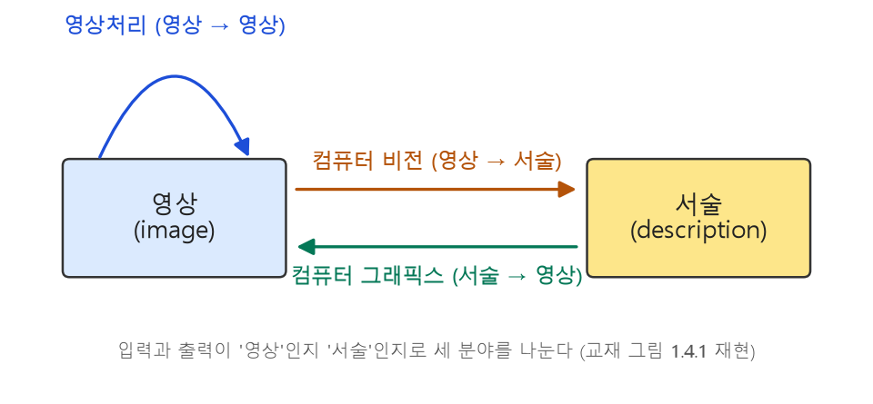
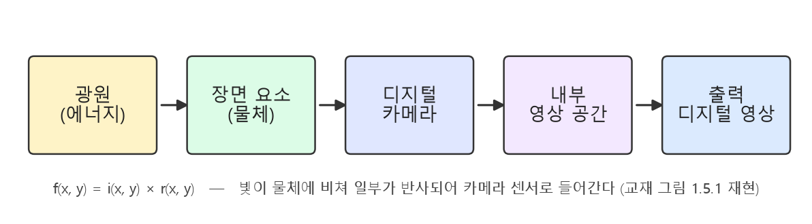
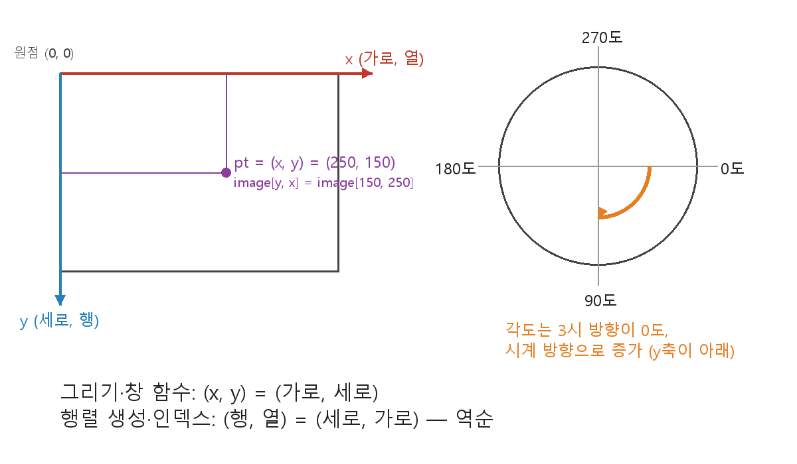
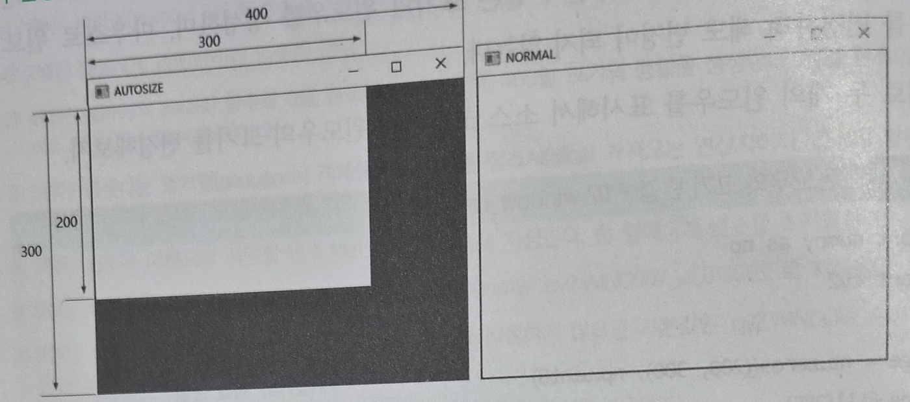
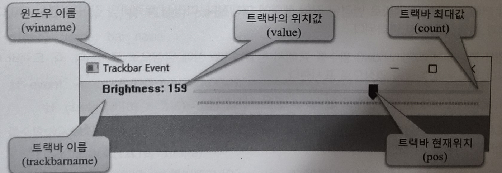
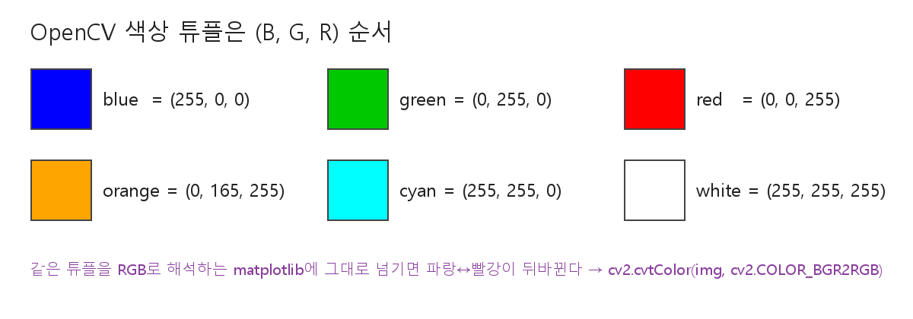
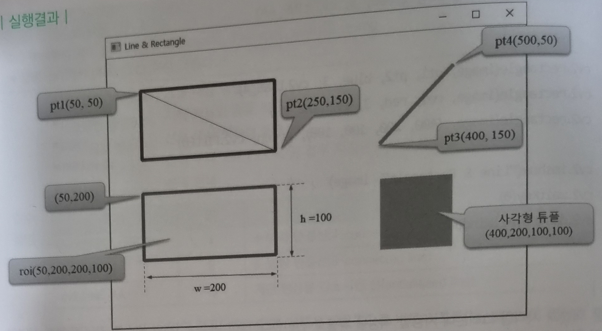
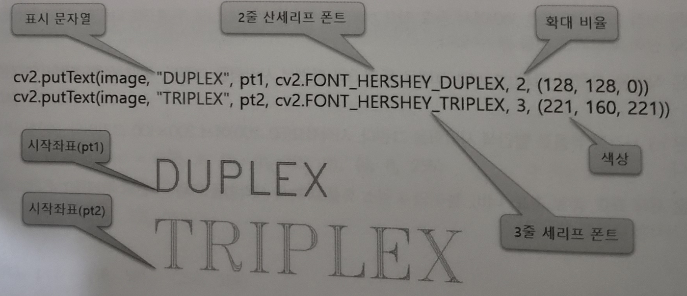
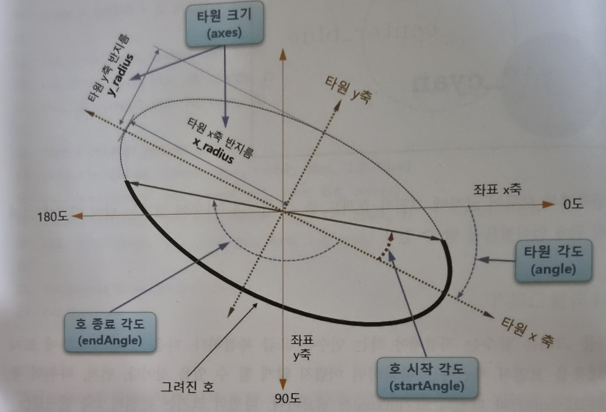
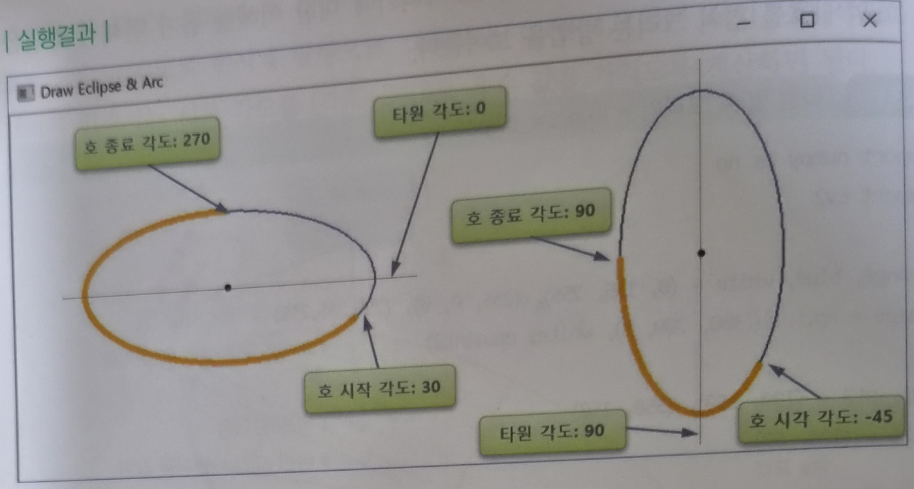

영상은 숫자 행렬이다. 화소마다 밝기 숫자가 하나씩 있고, 영상처리는 그 숫자들에 하는 수학 연산이다. 빛은 조명 세기와 반사 계수의 곱 f = i×r로 카메라에 들어오고, 표본화(몇 칸으로 쪼갤까 = 해상도 M×N)와 양자화(몇 단계 밝기로 반올림할까 = L = 2k)를 거쳐 디지털이 된다. 결과가 영상이면 저수준, 정보면 고수준이며, 영상처리·컴퓨터 비전·컴퓨터 그래픽스는 입출력 형태로 구분한다. 1920년대 신문 사진 전송에서 출발해 1960년대 우주 탐사에서 본격화된 이 기술은 오늘날 의료·방송·공장·출판·게임·기상 등 거의 모든 산업에 쓰인다.
화소에서 영상처리까지 — 세 단어로 시작하기
화소·영상·영상처리의 정의
슬라이드는 네 개의 용어 정의로 시작한다. 이 네 줄이 한 학기의 뿌리다.
화소 (pixel)
영상의 구성 요소. 사진을 확대하면 보이는 작은 점 하나가 화소다.
화소 처리
화소 하나하나의 값을 바꾸는 일. 영상처리의 출발점이라고 슬라이드가 못 박는다.
영상 (image)
밝기와 색상이 다른 일정한 수의 화소들로 구성된 것.
영상처리 (image processing)
입력된 영상을 어떤 목적을 위해 처리하는 기술. 곧 어떤 목적을 위해 수학적 연산을 이용해 화소들에 변화를 주는 것.
영상처리는 처리 대상에 따라 아날로그 영상처리와 디지털 영상처리로 나뉜다. 이 과목이 다루는 것은 컴퓨터가 숫자를 다루는 디지털 영상처리다. (슬라이드 5)
밝기 100 더하기 — 영상처리의 첫 번째 예
〈그림 1.1.1〉 영상처리의 예는 광안대교 야경 사진 4장이다. 어두운 원본의 모든 화소에 100을 더하면 밝아진 결과가 나오고, 밝은 원본에서 100을 빼면 어두워진 결과가 나온다. (슬라이드 6)

실험 ② 밝기 연산 (+/−)
0보다 작아지면 0으로, 255를 넘으면 255로 잘라냅니다(클리핑). 너무 밝게 하면 흰색으로 뭉개지는 이유예요.
결과물로 나누는 두 수준 — 저수준과 고수준
결과가 영상이면 저수준, 정보면 고수준
| 구분 | 결과물 | 예 |
|---|---|---|
| 저수준(low-level) 영상처리 | 영상 | 잡음 제거 |
| 고수준(high-level) 영상처리 | 영상이 아니라 영상의 특성을 나타내는 것 | 물체 인식 |
슬라이드의 정의는 짧다. 저수준 영상처리는 영상처리 결과가 영상인 경우, 고수준 영상처리는 결과가 영상이 아니라 영상의 특성을 나타내는 경우다.
단원요약(교재 p.35)은 한 줄을 더 붙인다. 영상처리는 잡음 제거 같은 저수준부터 물체 인식 같은 고수준까지 포함하며, "기본적인 영상처리"라고 하면 저수준 영상처리를 말한다.
해저 케이블에서 달 사진까지 — 영상처리의 역사
1920년대 — 신문사가 대서양을 건너 사진을 보내다
1920년대 초반, 런던–뉴욕 간 해저 케이블을 통해 신문사들이 사진을 전송했다. 대서양을 건너는 이미지 전송 시간이 1주일 이상에서 3시간으로 줄었다. (슬라이드 8)
1940~60년대 — 컴퓨터가 만든 기술 토대
본격적 영상처리를 위한 기술은 세 갈래로 갖춰졌다. (슬라이드 9 · 교재 p.24)
- 1940년대 폰 노이만의 디지털 컴퓨터 개념
- 1950년 이후 하드웨어: 트랜지스터, 1958년 IC(Integrated Circuit), 1970년대 마이크로프로세서, 1980년대 VLSI(Very Large Scale Integration)
- 1950~60년대 소프트웨어: 프로그래밍 언어, 운영체제
교재는 이 하드웨어·소프트웨어 발달이 합쳐져 "오늘날의 디지털 영상처리가 실제로 가능해졌다"고 정리한다. (p.24)
1960년대 — 우주 탐사가 연 본격적 시작
본격적 영상처리의 시작은 우주 탐사 계획(Space program)이다. Ranger 7호가 달 착륙 17분 전에 촬영한 달 영상에는 여러 훼손이 있었고, 이를 교정하기 위해 컴퓨터로 영상처리를 했다. 사진에 찍힌 마크는 기하학 보정용이다. 이 작업으로 디지털 영상처리의 잠재력이 확인되었다. (슬라이드 9)
교재는 배경을 더 적는다. 영상처리는 미국의 유인 우주 탐사 계획인 아폴로 계획(1961~1972)과도 관련이 있다. 1964년 미국 LA 부근의 JPL(Jet Propulsion Laboratory) 연구소에서 우주선이 보내온 훼손된 영상의 복원을 연구하면서, 대학과의 공동연구를 통해 본격적인 디지털 영상처리가 시작되었다. (p.24)
1970년대 이후 — 병원·인터넷·스마트폰으로
| 시기 | 사건 |
|---|---|
| 1920년대 초반 | 런던–뉴욕 해저 케이블로 신문 사진 전송. 1주일 이상 → 3시간 |
| 1940년대 | 폰 노이만의 디지털 컴퓨터 개념 |
| 1950~60년대 | 트랜지스터·IC(1958) 등 하드웨어, 프로그래밍 언어·운영체제 등 소프트웨어 발달 |
| 1960년대(1964) | 본격적 시작 — 우주 탐사 계획, Ranger 7호 달 영상 복원, JPL과 대학의 공동연구 |
| 1970년대 | 마이크로프로세서. CT·MRI 등 의료 분야, 원격 자원탐사, 우주 항공 분야로 발전 |
| 1980년대 | VLSI |
| 1990년대 | 브라우저 출시로 인터넷 시대 — 영상 검색·영상 전송·영상 광고, 디지털 방송 관련 컴퓨터 그래픽스, 디지털 카메라 보급과 컴퓨터 비전. 응용 분야 급속 확장 |
| 최근 | 스마트폰 내장 카메라로 누구나 영상을 얻는 환경 — 영상처리를 모든 곳에서 만난다 |
1970년대에는 우주 탐사와 더불어 CT(Computerized Tomography), MRI(Magnetic Resonance Imaging) 등 의료 분야와 원격 자원탐사, 우주 항공 분야로 영상처리가 더욱 발전했다. (슬라이드 10 · p.24)
1990년대 초반 브라우저 출시로 본격적인 인터넷 시대가 열리자 영상 검색·영상 전송·영상 광고, 디지털 방송과 관련한 컴퓨터 그래픽스, 디지털 카메라 보급과 연관된 컴퓨터 비전 등 응용 분야가 급속히 확장되었다. (슬라이드 10 · p.24)
그 결과 영상처리는 우주, 지질, 기상, 제품 검사, 항공, 원격탐사, 물리 및 전자현미경, 방사선·초음파 의료, 영상통신, 방송 등 산업 전 분야에 사용되지 않는 분야가 거의 없을 정도로 발전했다. 최근에는 스마트폰 보급으로 누구나 내장 카메라로 영상을 쉽게 얻게 되어, 영상처리 기술을 모든 곳에서 쉽게 만나게 되었다. (p.24)
비전·그래픽스와 경계 긋기 — 입출력으로 구분한다
세 분야, 하나의 기준 — 입력과 출력이 '영상'인가 '서술'인가
영상처리는 컴퓨터 비전, 컴퓨터 그래픽스와 서로 관련된다. 세 분야는 내용이 일부 겹쳐 구분이 때로는 명확하지 않을 수 있다. 그래도 입출력의 형태가 "영상"인지 "영상과 관련된 서술(description)"인지에 따라 크게 셋으로 나눌 수 있다. (p.24)

| 분야 | 입력 | 출력 | 예 (원천에 있는 것만) |
|---|---|---|---|
| 영상처리 | 영상 | 처리된 영상 | 잡음 제거, 밝기 조절(1.1절의 +100) |
| 컴퓨터 비전 | 영상 | 어떤 정보(서술) | 얼굴 인식(얼굴 영상 → 누구인지), 지문 인식, 번호판 인식 |
| 컴퓨터 그래픽스 | 어떤 서술(description) | 영상 | CAD 프로그램 — 물체의 수치 입력 → 그래픽 영상 생성 |
컴퓨터 비전은 영상에서 특정한 정보를 추출하여 처리하는 기술이다. 얼굴 영상이 입력되면 그 얼굴이 누구인지 인식하는 것이 예다. 교재는 "컴퓨터 비전은 기본적인 영상처리를 바탕으로 한다"고 덧붙인다. (p.24~25)
컴퓨터 그래픽스는 컴퓨터 비전과 반대로 입력이 어떤 서술이고 출력이 원하는 영상이다. 즉 데이터를 사용하여 그리고자 하는 물체의 영상을 만들어 내는 기술이다. (p.25)
빛이 숫자가 되기까지 — 영상의 형성
영상은 함수다 — f(x, y)
영상의 정의: 위치값과 밝기값을 가진 일정한 수의 화소들의 모임. 영상을 f(x, y)로 표시한다. (x, y)는 위치를 가리키는 좌표값이고, f( )는 그 위치의 밝기값이다. (p.25 · 슬라이드 12)
교재는 여기서 "그러면 이와 같은 화소의 집합인 영상은 어떤 원리로 형성되는 것일까?"라고 묻고 다음 내용으로 넘어간다. (p.25)
조명 × 반사율 — 형성 모델 f = i × r

영상이 형성되려면 빛(에너지)이 물체에 비치고, 물체에 비친 빛의 일부가 반사되어 카메라 센서에 들어가야 한다. 물체 표면이 매끄러우면 빛이 많이 반사되어 카메라에 들어가고, 표면이 거칠면 빛의 일부만 들어간다. (p.26)
표본화 — 무한한 값을 유한 개의 칸으로
카메라 센서에 들어온 빛으로 최종 디지털 영상을 만들려면 표본화(sampling)와 양자화(quantization) 두 단계가 필요하다. (p.26)
센서에 감지된 값은 아날로그값이어서 무한개의 연속된 값을 가진다. 먼저 카메라 해상도에 해당하는 유한 개의 화소 수만큼만 입력값을 취한다. 이것이 표본화(샘플링) 단계다. 슬라이드의 정의: "무한한 연속된 값을 일정한 해상도에 따라 유한 개의 화소 수만큼 입력 값을 취하는 과정". (p.26 · 슬라이드 13)

교재 〈그림 1.5.2〉 '영상 형성을 위한 표본화와 양자화 단계'는 원형 물체 영상 위에 A–B 단면선을 긋고, 그 구간의 연속(아날로그) 밝기 신호 → Sampling(일정 간격 위치에서 이산 샘플 추출) → Quantization(그레이 레벨 막대에 따라 제한된 단계 값으로 변환) → 이산 디지털 값의 순서로 보여 준다. 슬라이드 13 오른쪽에는 연속 형상을 격자로 샘플링한 결과 그림이 있다. (p.27 · 슬라이드 13)
실험 ① 표본화 · 양자화
양자화 — 128.345는 8비트에서 그냥 128
디지털 카메라는 제한된 비트 크기로 화소값을 나타내므로 밝기값을 모두 다 나타낼 수 없다. 어떤 위치의 표본화된 화소값이 128.345라 해도 8비트 디지털 화소로는 128로만 나타난다. 이렇게 표본화된 값을 디지털 화소로 표현하는 단계가 양자화다. 슬라이드의 정의: "제한된 비트 수로 화소값을 나타내려 밝기 값을 정수화시키는 과정". (p.27 · 슬라이드 14)
카메라 센서에 들어온 값은 연속된 무한한 종류의 값
일정한 위치에서, 카메라가 지원하는 해상도 수에 따라 표본화하여 화소 수를 정한다
표본화된 화소를 제한된 비트의 디지털 값으로 나타낸다
표본화 sampling
연속 신호에서 몇 칸의 값만 취할지 정한다 → 화소 수, 즉 해상도 M×N이 결정된다.
양자화 quantization
표본값을 몇 단계 밝기로 정수화할지 정한다 → k비트면 L = 2k단계. 128.345도 8비트에서는 128.
행렬로 읽는 디지털 영상 — M×N, 2^k, g = T[f]
M×N 격자와 좌표계 — 원점은 왼쪽 위
표본화와 양자화를 거친 영상은 일정 수의 화소들의 집합인 M × N 크기의 영상으로 표현된다. 원점의 위치는 (x, y) = (0, 0)인 왼쪽 위 코너다. (p.28)

교재 〈그림 1.6.1〉 '디지털 영상의 공간 표현'은 원점 (0,0)이 왼쪽 위에 있고, x축은 행 방향(0~M−1), y축은 열 방향(0~N−1)이며, 격자의 각 점이 화소 f(x, y)다. (p.28 · 슬라이드 15)
k비트 → 2^k 단계, 그리고 저장 공간 S = M×N×k
표본화 수에 따라 세로·가로 크기 M과 N이 결정된다. 각 화소의 양자화 수준에 따라 밝기값의 수준(gray-level)이 정해진다. (p.28 · 슬라이드 15)
| k (비트) | L = 2^k (밝기 단계) | 밝기값 범위 |
|---|---|---|
| 1 | 2 | 0~1 |
| 2 | 4 | 0~3 |
| 4 | 16 | 0~15 |
| 8 | 256 | 0~255 |
교재 연습문제 8번(p.36): "그레이 레벨이 256인 영상의 크기가 1,024×768이라면 저장 공간은?" 그레이 레벨 256 = 28이므로 k = 8. S = 1024 × 768 × 8 = 6,291,456비트 = 786,432바이트 = 768KB.
영상은 행렬이다 — 모든 영상처리는 행렬 처리
화소들은 일반적으로 정수값을 갖는 수이므로, 영상은 수들의 집합인 매트릭스 A로 표현할 수 있다(그림 1.6.1). 따라서 모든 영상처리는 이 매트릭스의 처리로도 생각할 수 있다. (p.28)
2부에서 본격적으로 다루는 영상처리는 그림 1.6.2처럼 대부분 화소 공간에서 처리가 일어난다. (p.28)
g = T[f] — 영상처리의 일반식
교재 〈그림 1.6.2〉 '디지털 영상처리의 개념'은 왼쪽 입력 영상 f(x, y)(원점과 (x, y) 화소 표시)에서 화살표를 거쳐 오른쪽 결과 영상 g(x, y)로 가는 그림이다. 슬라이드 16도 같은 그림(입력 영상 격자 → 변환 → 결과 영상)을 쓴다.
산업 속 영상처리 — 응용 분야 여섯 가지, 그리고 한 장 정리
의료 — CT·MRI·PET·초음파
영상처리 응용 분야는 초기에 사진 전송이나 잡음 제거 같은 기본적인 영상처리에서 출발해, 오늘날 컴퓨터 비전이나 컴퓨터 그래픽 분야와 겹치는 다양한 분야로 확대되었다. (p.29)
의료 산업은 영상처리를 오래전부터 사용해 왔다. 다루는 영상에는 X-ray와 초음파 영상 등이 포함된다. (p.29)
| 장비 | 영문 (교재 표기) | 무엇에 쓰는가 |
|---|---|---|
| CT 컴퓨터 단층촬영 | Computerized Tomography | 척추, 머리, 골반 같은 뼈의 상태를 진단 |
| MRI 자기공명 영상 | Magnetic Resonance Imaging | 척추와 심장 같은 얇은 조직을 가시화 |
| PET 양전자 단층촬영 | Positron Emission Tomography | 신체의 화학적·물리적 처리 과정을 측정. 주로 뇌나 심장 질환 진단 |
이 영상들은 컴퓨터에 저장되어 중요한 부분을 집중해 볼 수 있도록 확대와 조작이 가능하다. 요즘 CT·MRI는 촬영 영상들로 3차원 영상을 만들어, 스크린에서 특정 부분을 3차원 공간상에서 회전·변형시킬 수도 있다. 초음파로 태아의 성장과 이상 유무를 진단·관찰하는 것은 이미 일반화되었다 — 교재는 이를 "영상처리가 우리에게 가져다준 큰 혜택 중 하나"라고 적는다. (p.30)
〈그림 1.7.1〉 의료 영상의 예: 뇌 단층촬영 영상 여러 장이 격자로 배열된 사진. (p.30)
방송 통신 — 디지털 방송, 디지털 카메라, 스포츠 중계
아날로그 텔레비전 (과거)
영상 데이터를 순차적으로 획득한 뒤 변조해 전송 → 잡음 처리 문제와 해상도 향상에 제한이 있었다.
디지털 방송 (현재)
고해상도 영상을 취득해 디지털 영역에서 압축한 뒤 전송 → 잡음 처리 문제가 거의 사라지고 다양한 서비스가 가능해졌다.
디지털 방송 서비스는 다양한 영상처리 기술 개발을 활발하게 했고, 앞으로도 더 많은 기술이 개발될 것이다. (p.30)
방송 분야의 응용 제품으로 디지털 카메라가 있다. 디지털 카메라의 기능은 광학 분야와 영상처리 분야로 나뉜다. 과거에는 광학 기술이 카메라 성능을 결정했다면, 현재는 디지털 영상처리 분야가 훨씬 더 중요해졌다. 화질 향상뿐 아니라 특수 효과, 영상에서 사람 얼굴만 인식하는 등의 지능적 기술이 적용된다. (p.30~31)
스포츠 방송에도 영상처리가 적용되어, 기본 동작 정보에 합성된 영상 형태로 제공된다. 야구 중계에서 스트라이크 존과 함께 투수가 던진 공의 위치를 화면에 표시하는 것, 축구 중계 중 중앙선이나 골라인 근처에 3D로 제작된 가상 광고를 넣는 것이 그 예다. (p.31 · 슬라이드 17)
〈그림 1.7.2〉 스포츠 방송 분야의 예: 경기장 중계 화면. 〈그림 1.7.3〉 가상 광고 예: 축구장에 합성된 스포츠 브랜드 광고 화면. (p.31)
공장 자동화(머신 비전)와 출판·사진
3) 공장 자동화 분야
산업 기술이 발달하면서 과거 공장에서 사람이 하던 많은 일을 산업용 로봇이 대신하게 되었다. 자동화된 생산 라인에서 제품이 생산되면 산업용 카메라 등으로 품질을 모니터링해 불량을 즉각 검사한다. (p.31 · 슬라이드 18)
즉 제품의 디지털 영상을 만들어 불량 유무를 기계가 자동으로 판별하며, 이 품질 검사에 디지털 영상처리 기술이 활용된다. 이 분야를 특히 머신 비전(machine vision)이라고 한다. 근래에는 산업용 로봇에 3D 카메라를 직접 설치해 검사와 작업을 동시에 하는 시스템도 개발되고 있다. (p.31~32)
〈그림 1.7.4〉 카메라의 제품 검사 장면: 생산 라인 위의 산업용 카메라. (p.31)
4) 출판 및 사진 분야
사진사, 광고 제작자, 출판 종사자도 영상처리를 기본적으로 사용한다. 영상을 만들어 내고, 품질을 향상시키고, 색상을 조작하는 작업에 영상처리 기술을 쓴다. (p.32 · 슬라이드 18)
기존 영상에 영상처리 기술을 융합해 새로운 합성 영상을 만들 수 있다. 광고 분야의 사진 수정 기술은 사진작가에게 다양한 효과와 수정을 가능하게 한다. 교재는 "요즘은 포토샵을 적용하지 않은 광고사진이 존재하지 않을 정도"라고 적는다. (p.32)
〈그림 1.7.5〉 전자 출판 분야: 노트북으로 작업하는 사진("Self Publishing Tools You Need to Know" 화면). 〈그림 1.7.6〉 사진 편집의 예: 모니터의 사진 편집 화면. (p.32)
애니메이션·게임과 기상·지질 탐사
5) 애니메이션 및 게임 분야
영상처리 기술은 2차원·3차원 애니메이션이나 게임 제작에도 쓰인다. 경우에 따라 실제 촬영 영상과 그래픽 기술을 조합해 현실감을 높인다. (p.32 · 슬라이드 19)
영화는 사실적인 캐릭터 묘사를 위해 매우 복잡한 모델링과 고화질 렌더링이 요구된다. 이를 위해서는 고급 영상처리 기술뿐 아니라 많은 양의 인적·물적 자원이 소요된다. (p.32)
〈그림 1.7.7〉 애니메이션 제작의 예: 와이어프레임 캐릭터 모델링 화면. 〈그림 1.7.8〉 캐릭터 모델링 예: 3D 캐릭터 와이어프레임 3단계. (p.33)
6) 기상 및 지질 탐사 분야
날씨 예측과 태풍 같은 자연재해 예방에도 영상처리가 중요하다. 위성에서 보낸 사진을 분석하고, 각 지점의 온도·습도·풍향 등 방대한 기상 정보를 처리하는 데 영상처리가 쓰인다. 슬라이드 19는 이를 "방대한 기상 정보의 시각화"라고 요약한다. (p.33)
광물 탐사나 지질 분야 같은 원격 탐사에서는 다양한 주파수의 파장으로 멀티스펙트럴 영상(multispectral image)을 획득·분석해 훨씬 정확한 광물·지질 정보를 얻는다. 대도시 주거 환경이나 국토 개발 정보를 위해 항공사진을 주기적으로 만들고, 다양한 주파수의 사진을 영상처리해 많은 정보를 얻는다. (p.33)
〈그림 1.7.9〉 기상 영상의 예: 위성 구름 영상. 〈그림 1.7.10〉 원격 지형 탐사 사진의 예: 컬러 합성된 위성 지형 영상(강·도시 구분). (p.33)
그 밖의 분야와 확장 중인 기술 네 가지
그 외에도 응용 분야가 다양해 교재는 지면 제한상 다 소개하지 못한다며 〈그림 1.7.11〉을 참고하라고 한다. 슬라이드 20 '기타 영상처리 분야'도 이미지 모음이다. (p.34)
〈그림 1.7.11〉 영상처리 응용 분야: 중심 '영상처리'에서 뻗어 나가는 방사형 다이어그램. 가지는 다음 12개다.
- 의료 분야(방사선, 초음파)
- 우주 항공 분야
- 레이더 및 기상 분야
- 지질 탐사 분야
- 공장 자동화 분야
- 해양 분야
- 로봇 시각 분야
- 전자현미경 및 입자 물리 분야
- 애니메이션 및 게임 분야
- 방송 통신 분야
- 자율 내비게이션 분야
- 감시 분야
영상처리는 단순한 응용 분야를 넘어 관련 기술 분야로도 확대되고 있다. (p.34)
| 기술 | 영문 | 무엇인가 |
|---|---|---|
| 내용기반 영상검색 | content based image retrieval | 영상의 내용 자체인 질감, 컬러, 모양 등을 사용하여 영상을 검색 |
| 디지털 워터마킹 | digital watermarking | 디지털 영상의 저작권 보호 |
| 스테가노그라피 | steganography | 비밀 정보 통신 |
| 계산 사진학 | computational photography | 최근 등장. 3차원 장면 정보를 추출 |
한 장 정리 — 단원 요약과 교재 연습문제
교재 p.35의 단원 핵심 요약 7개를 그대로 옮긴다. 시험 직전에 이 일곱 줄만 읽어도 된다.
- 영상처리: 어떤 목적을 위해 입력된 영상에 수학적 연산을 화소에 가해 변화를 주는 것.
- 영상처리는 잡음 제거 같은 저수준부터 물체 인식 같은 고수준까지 포함. 기본적인 영상처리는 저수준 영상처리를 말함.
- 영상처리의 역사는 IT 기술에 힘입어 1960년대 초부터 본격적으로 가능하게 됨.
- 관련 분야인 컴퓨터 비전, 컴퓨터 그래픽스는 서로 관련이 있고, 서로의 구분은 입력의 형태로 구분할 수 있음.
- 영상의 형성: 광원으로부터 물체에 비친 빛이 카메라 센서를 통해 영상을 형성. 영상 f(x, y)는 조명의 세기 i(x, y)와 반사계수 r(x, y)의 곱.
- 디지털 영상은 표본화(sampling)와 양자화(quantization)를 거쳐 일정한 수의 화소의 집합 M×N 크기로 표현됨.
- 영상처리는 의료, 방송통신, 최근의 계산 사진학 등 다양한 응용 분야를 가지며 점차 확대되고 있음.
교재 연습문제 10제 (p.36) — 이 노트의 어디를 보면 되는가
| 번호 | 문제 요지 | 답이 있는 곳 |
|---|---|---|
| 1 | 디지털 영상의 정의는? | 1-5 (위치값·밝기값을 가진 화소들의 모임) + 1-6 (M×N) |
| 2 | 디지털 영상처리란? | 1-1 (수학적 연산을 화소에) |
| 3 | 저수준·고수준 영상처리의 차이점은? | 1-2 |
| 4 | 1920년대 영상처리는 왜 디지털 영상처리의 시작으로 인정되지 못하는가? | 1-3 |
| 5 | 영상처리·컴퓨터 비전·컴퓨터 그래픽스의 차이 | 1-4 |
| 6 | 디지털 영상 형성 과정을 설명하라 | 1-5 |
| 7 | 카메라 해상도와 표본화·양자화의 관련 | 1-5 |
| 8 | 그레이 레벨 256, 1,024×768 영상의 저장 공간 | 1-6 (6,291,456비트 = 768KB) |
| 9 | 관심 있는 응용 분야와 사용 기술 조사 | 1-7 |
| 10 | 계산 사진학 조사 | 1-7 확장 기술 표 |
이 장의 함수·문법·용어 한눈에
누르면 형식·인수·뜻이 뜹니다. 본문과 코드의 밑줄 친 이름도 같은 카드입니다.
OpenCV는 2,500개가 넘는 알고리즘을 담은 오픈 소스 컴퓨터 비전 라이브러리다. 1999년 인텔의 IPL을 바탕으로 시작해 지금은 구글·마이크로소프트·도요타까지 쓴다. 이 장은 그 OpenCV를 파이썬으로 쓰기 위한 준비 단계다 — 파이썬 설치, 파이참 설치, 인터프리터 연결, opencv-python 설치, 그리고 회색 창 하나를 띄우는 첫 프로그램까지. 설치 절차는 메뉴 이름을 그대로 적었으니 화면과 대조하며 따라가면 된다.
OpenCV — 무엇이고 무엇을 할 수 있나
먼저, '오픈 소스'라는 말의 뜻
교재 2장은 본문에 앞서 칼럼 하나로 시작한다. 제목은 "오픈 소스(open source)란 무엇인가? — 무료인가? 저작권이 있는가?". OpenCV의 'Open'이 무슨 뜻인지부터 짚는 것이다.
오픈 소스 소프트웨어는 소스 코드의 사용과 수정을 허용하는 소프트웨어다. '오픈 소스'라는 말 자체는 1998년 2월 초 캘리포니아 팔로알토에서, 넷스케이프 브라우저 소스 공개를 알린 직후 열린 전략 회의에서 만들어졌다.
넓은 의미의 오픈 소스는 소스 코드뿐 아니라 디자인·내용물까지 사용을 허락하는 생산물이다. 오픈 소스 비디오 게임, 오픈 소스 하드웨어, 오픈 소스 뮤직, 심지어 오픈 소스 콜라 음료수까지 있다. 문을 닫아 두는 것보다 열어 공개하는 쪽이 모두에게 더 많은 발전·기여·혜택을 돌려주기 때문이다. 옛말에 開門萬福來(개문만복래) — 문을 열면 많은 복이 들어온다 — 는 말도 있다. (교재 p.38, 로고 그림: OpenCV·OpenGL·OPEN API INITIATIVE)
OpenCV의 정체와 규모
OpenCV(Open Source Computer Vision Library)는 영상처리와 컴퓨터 비전 관련 오픈 소스 라이브러리다. 이 라이브러리를 쓰면 영상처리·컴퓨터 비전 응용 프로그램을 쉽고 빠르게 만들 수 있다. (교재 p.39)
라이브러리는 2,500개가 넘는 알고리즘으로 구성된다. 영상처리·컴퓨터 비전·기계 학습의 전통적인 알고리즘뿐 아니라 최첨단 알고리즘까지 갖추고 있다.
이 알고리즘들로 할 수 있는 일 (교재 열거 순서 그대로)
- 얼굴 검출과 인식
- 객체 인식
- 객체의 3D 모델 추출
- 스테레오 카메라에서 3D 좌표 생성
- 고해상도 영상 생성을 위한 이미지 스티칭(stitching — 교재 표기 'stiching')
- 영상 검색
- 적목 현상 제거
- 안구 운동 추적
얼마나 쓰이나
교재 기준 4만 7천 이상의 사용자 그룹과 1,800만 번 이상의 다운로드 횟수. 기업·연구소·정부 기관에서 광범위하게 쓰인다.
| 구분 | 이름 |
|---|---|
| 대기업 | 구글, 야후, 마이크로소프트, 인텔, IBM, 소니, 혼다, 도요타 |
| 신생 기업 | Applied Minds, VideoSurf, Zeitera |
실제 활용 사례 (교재 p.39)
- 스트리트 뷰 영상들을 모아서 스티칭
- 이스라엘의 감시 비디오에서 침입 탐지
- 중국의 광산 장비 모니터링
- 윌로우 개러지(Willow Garage)에서 로봇이 물체를 탐색하고 픽업하는 데 활용
- 유럽의 수영장 익사 사고 감지
- 스페인과 뉴욕에서 상호작용 예술(interactive art) 실행
기술 특징 — 언어·운영체제·고속화
인터페이스(언어)
C++, 파이썬(Python), Java, 매트랩(MatLab). 슬라이드는 C도 포함해 C, C++, Python, Java, 매트랩으로 적는다.
운영체제
윈도우즈, 리눅스, 안드로이드, 맥OS 등 다양한 운영체제 지원.
고속 알고리즘
MMX(MultiMedia eXtension)와 SSE(Streaming SIMD Extensions) 명령어로 고속 알고리즘 구현 → 실시간 비전 응용에 강점.
GPU 인터페이스
CUDA(Compute Unified Device Architecture)와 OpenCL(Open Computing Language) 인터페이스가 개발되어 쓰이고 있다.
OpenCV 연혁 — 1999년 인텔에서 4.2 버전까지
시작과 주요 발표 연도
OpenCV는 인텔(Intel)에서 개발된 IPL(Image Processing Library)을 기반으로 1999년부터 컴퓨터 비전 라이브러리로 시작했다. (교재 p.40)
| 연도 | 사건 |
|---|---|
| 1999 | 인텔 IPL을 기반으로 컴퓨터 비전 라이브러리로 시작 |
| 2006 | 1.0 버전 발표 |
| 2009 | 2.0 버전 — C++ API를 기본으로 제공 |
| 2015년 6월 | 3.0 버전 발표 |
| 2018년 11월 | 4.0 버전 발표 |
| 2019년 12월 | 4.2 버전 발표 |

〈표 2.1.1〉 버전별 특징 — 전문
교재 표 제목은 원문 그대로 "OpneCV 버전별 특징"(오타)이다. 아래는 표의 항목을 빠짐없이 옮긴 것이다.
| 버전 | 특징 |
|---|---|
| 1.0 | · C 언어 기반 API · 구조체 기반 데이터 구조 사용 · 비주얼 스튜디오에서 라이브러리 컴파일 후 사용 · highgui 모듈에서 8비트 PNG, JPEG2000 입출력 지원 · 샘플 예제 파일 추가 (calibrate.cpp, inpaint.cpp, leter_recog.cpp 등) |
| 2.0 | · C++ 언어 기반 API · 클래스 기반 데이터 구조 도입 · CMake를 이용하여 라이브러리 컴파일 후 사용 가능 · highgui 모듈에서 스테레오 카메라 지원 · 소스 디렉터리 구조 구성 |
| 2.2 | · 템플릿 자료구조 추가 · 기존 5개 라이브러리를 12개의 모듈로 재구성(opencv_core, opencv_imgproc, opencv_highgui, opencv_ml 등) · 안드로이드 지원 가능 · highgui 모듈에서 16비트 LZW-압축 TIFF 지원 · GPU 처리 지원 |
| 2.4 | · cv::Algorithm 클래스 도입 · SIFT와 SURF 모듈 유료화 · SIFT 성능 대폭 개선 · 컬러 영상 캐니 에지 수행 |
| 3.0 | · cv::Algorithm 적극 사용 · 1500개 패치 github 제출 · OpenCL을 사용하는 투명 GPU 가속 레이어 도입 · NEON 내장 함수 사용한 OpenCV 함수 가속화 · Python & Java 바인딩 확장 및 Matlab 바인딩 도입 · Python 3.0 지원 향상 · 안드로이드 지원 향상 · 비디오 캡쳐 및 멀티스레딩 함수 개선 |
| 3.4 | · dnn 모듈 개선 — fast R-CNN 지원 / Javascript 바인딩 / OpenCL 가속화 포함 · OpenCL 커널 바이너리에 디스크 캐시 및 수동 로딩 구현 · GSoC 프로젝트 통합으로 백그라운드 감산 알고리즘 구현 |
| 4.0 | · 1.x 버전 C API 제거 · 효과적인 그래픽 기반 영상처리 엔진으로 G-API 모듈 추가 · OpenVINO 딥러닝 툴킷으로 dnn 모듈 업데이트(교재·슬라이드 표기 'OpenVION') · 키넥트 퓨전 알고리즘 구현 · QR코드 검출기 추가 · 효과적인 광류 알고리즘 추가 |
| 4.1 | · core와 imgproc 모듈 실행 최적화 · dnn 모듈 개선 — NN Builder API로 교체 / 인텔 Neural ComputerStick2 지원 · 안드로이드 미디어 NDK API 지원 · Hand-Eye 캘리브레이션 추가 |
| 4.2 | · dnn 모듈 개선 — cuda와 통합된 GSoC 프로젝트 · 성능 개선 — SIMD 지원 확대 / pryDown 멀티스레딩 지원(교재 표기 그대로) · FSR 알고리즘 |
| 단계 | 버전 | 핵심 변화 |
|---|---|---|
| C 시대 | 1.0 (2006) | C API, 구조체 기반 자료구조 |
| C++ 전환 | 2.0 (2009) ~ 2.4 | 클래스 기반, 12개 모듈 재구성(2.2), SIFT·SURF 유료화(2.4) |
| GPU·모바일 | 3.0 (2015) ~ 3.4 | OpenCL 투명 가속, Python 3 지원, dnn 딥러닝 모듈(3.4) |
| 딥러닝 시대 | 4.0 (2018) ~ | G-API, QR코드 검출기, dnn CUDA 통합(4.2) |
파이썬 — 한 줄씩 바로 실행되는 언어
파이썬의 정체
파이썬(Python)은 네덜란드 출신 프로그래머가 1991년에 발표한 인터프리터 언어다. 교재 각주의 정의: 소스 코드를 1행씩 해석하고 실행해 바로 결과를 확인할 수 있는 언어. (교재 p.41)
고급(high level) 언어
기계가 아니라 사람이 읽기 쉬운 쪽에 가까운 언어.
플랫폼 독립적
윈도우·리눅스·맥 어디서든 같은 소스가 돈다.
객체지향적
데이터와 기능을 객체 단위로 묶어 다룬다.
동적 타입 · 대화형
동적 타입(dynamically typed): 변수의 자료형을 미리 적지 않고 값이 들어올 때 정해진다. 대화형: 한 줄 치면 바로 답이 온다.
인터프리터 방식과 컴파일 방식
인터프리터 방식 (파이썬)
1행씩 명령어를 입력하면 바로 해석해서 결과를 보여 준다(교재 단원 요약). 실험·수정이 빠르다.
컴파일 방식 (C 등) — 보충
소스 전체를 먼저 기계어로 번역(컴파일)한 뒤 실행한다. 번역이 끝나야 결과를 볼 수 있지만 실행 속도가 빠르다. 교재 연습문제 1번이 이 둘의 비교를 묻는다.
이름의 유래 — 뱀이 아니라 코미디
어디에 쓰이나
파이썬은 주로 컴퓨터 프로그래밍 교육용으로 많이 쓰인다. 그렇다고 실무에서 덜 쓰이는 것은 아니다. 구글의 인공지능 인기와 더불어 사용이 확장되고 있는 언어다. (교재 p.42)
- 파이썬을 만든 사람이 근무했던 구글의 소프트웨어 50% 이상이 파이썬으로 작성됨(교재 기준)
- 온라인 사진 공유 서비스 인스타그램(Instagram)
- 파일 동기화 서비스 드롭박스(Dropbox)
파이썬 설치하고 IDLE로 첫 파일 실행하기
다운로드와 설치 (윈도우 기준)
교재는 윈도우 설치만 설명한다. 다른 운영체제는 파이썬 홈페이지(http://www.python.org)의 설명을 참고한다. 교재 화면은 Python 3.9.7, 슬라이드 화면은 Python 3.11.4 기준이다 — 버전은 계속 올라가므로 절차만 같으면 된다.
파이썬 공식 홈페이지 → [Downloads] 메뉴 클릭(교재 표기 'Donwloads') → 팝업 메뉴에서 'Python 3.9.7' 아이콘 클릭(슬라이드는 'Python 3.11.4'). 다른 버전은 [All releases] 메뉴에서 고른다. 화면에는 "Note that Python 3.9+ cannot be used on Windows 7 or earlier." 문구가 보인다. (〈그림 2.2.1〉)
내려받은 python-3.9.7-amd64.exe를 실행한다. 첫 화면은 Install Now / Customize installation, 아래에 "Install launcher for all users (recommended)"와 "Add Python 3.9 to PATH" 체크박스. 'Add Python 3.9 to PATH'를 반드시 체크한다 — 윈도우 콘솔창에서 어느 디렉터리에서나 파이썬 명령을 쓰기 위해서다. (〈그림 2.2.2〉 왼쪽 아래)
Advanced Options 화면의 Customize install location에 C:\Python을 입력한다. 설치 폴더를 찾기 쉽게 하기 위해서다. (〈그림 2.2.2〉 오른쪽 아래)
윈도우 시작 메뉴에서 [Python 3.9] 폴더를 찾아 클릭하면 네 항목이 보인다: IDLE (Python 3.9 64-bit), Python 3.9 (64-bit), Python 3.9 Manuals (64-bit), Python 3.9 Module Docs (64-bit). (〈그림 2.2.3〉)
| Advanced Options 항목 (〈그림 2.2.2〉) | 뜻 |
|---|---|
| Install for all users | 모든 사용자 계정에 설치 |
| Associate files with Python (requires the py launcher) | .py 파일을 파이썬과 연결 |
| Create shortcuts for installed applications | 바로가기 생성 |
| Add Python to environment variables | 환경 변수(PATH)에 추가 |
| Precompile standard library | 표준 라이브러리 미리 컴파일 |
| Download debugging symbols / Download debug binaries (requires VS 2017 or later) | 디버그용 파일 내려받기 |
python을 쳐도 '명령을 찾을 수 없다'고 나온다. 교재가 굳이 '어느 디렉터리에서나 명령을 할 수 있도록'이라고 이유를 적은 부분이다.셸(Shell)에서 바로 실행해 보기
시작 메뉴의 [Python 3.9 (64-bit)]를 실행하면 콘솔 윈도우가 열린다(〈그림 2.2.4〉). 여기에 파이썬 명령어를 입력하고 엔터키를 누르면 바로 해석해서 결과를 보여 준다. 이런 프로그램을 셸(Shell) 프로그램이라 하며, 인터프리터 방식의 프로그램이다. (교재 p.43)
〈그림 2.2.4〉의 셸 실행 예
print('hello')입력 →hello출력a = 5,b = 10,c = a + b차례로 입력 → 아무 출력 없음(값만 저장)c입력 →15출력 — 셸은 식의 값을 바로 보여 준다
셸의 한계와 에디터의 필요
인터프리터 방식은 간단한 예제를 작성할 때는 편리하지만 여러 줄의 소스 코드를 가진 프로그램을 만들 때는 불편하다. 또한 인터프리터를 종료하면 프로그램이 사라져 소스를 다시 쓰지 못한다. 그래서 여러 번 사용할 프로그램은 에디터(Editor, 코드 편집기)로 만든다. (교재 p.43~44)
셸(Shell)
한 행 입력 → 즉시 해석·실행·결과 표시. 종료하면 사라진다. 간단한 실험용.
에디터(Editor)
소스 코드를 파일로 편집·저장. 저장되어야 실행할 수 있다. 여러 번 쓸 프로그램용.
IDLE로 hello.py 만들고 실행하기
파이썬을 설치하면 IDLE이라는 이름으로 내장된 통합 개발 환경(IDE, Integrated Development Environment)이 있다. IDLE은 Integrated Development and Learning Environment의 약자다(교재 각주 2). 간단한 소스 편집과 실행이 가능한 셸 프로그램이다(슬라이드 12).
윈도우 시작 메뉴 [Python 3.9] 폴더 → [IDLE (Python 3.9 64-bit)] 클릭 → 셸(Shell) 윈도우가 열린다(〈그림 2.2.5〉 왼쪽, 'IDLE Shell 3.9.7'). 앞서 본 것과 비슷한 셸 프로그램이며 아직 에디터가 아니다.
셸의 메뉴에서 [File] → [New File](교재 표기 'New FIle', 단축키 Ctrl+N) → 에디터 윈도우가 열린다(〈그림 2.2.5〉 오른쪽). 제목 표시줄의 "*untitled*"는 아직 저장되지 않았다는 뜻이다.
에디터에 아래 두 줄을 적는다. "hello"라는 글자를 셸에 표시하는 소스다.
[File] → [Save] → [다른 이름으로 저장하기] 창 → 적당한 폴더 선택(그림에서는 source > chap02) → 파일 이름 "hello.py", 파일 형식 Python files (*.py;*.pyw) → [저장]. 저장되면 제목 표시줄에 경로와 파일 이름이 표시된다. (〈그림 2.2.6〉)
[Run] → [Run Module](단축키 F5) → 소스가 파이썬 셸에서 실행되어 결과가 표시된다(〈그림 2.2.7〉). 셸에는 "========== RESTART: C:/Python/01.hello.py ==========" 줄 다음에 hello가 찍힌다.
hello
일반적인 파이썬 예제라면 IDLE로도 충분하다. 그러나 딥러닝이나 영상처리처럼 임포트로 여러 소스 파일이 연관되는 복잡한 프로그래밍에는 부족한 점이 많다. 그래서 교재는 파이참(PyCharm)을 쓴다. (교재 p.45)
파이참 설치 — IDE를 쓰는 이유
통합 개발 환경(IDE)이란
통합 개발 환경(IDE)은 개발자가 소프트웨어를 개발하는 과정에 필요한 모든 작업을 하나의 소프트웨어에서 처리할 수 있게 해 준다. 에디터·디버거·컴파일러·인터프리터 등을 개발자에게 제공한다. (교재 p.45~46)
- 자주 쓰이는 IDE: 비주얼 스튜디오, IntelliJ IDEA, 이클립스, 파이참, Dev-C, 안드로이드 스튜디오 등
파이참의 특징과 두 가지 버전
파이참(PyCharm)은 젯브레인즈(JetBrains)사의 IntelliJ IDEA에 기반을 두고 개발된, 파이썬 언어를 위한 거의 모든 기능을 갖춘 IDE다. 파이썬 개발 도구 중 가장 높은 완성도를 지녔다고 평가받는다. (교재 p.46)
널리 쓰이는 이유 (교재가 든 장점 세 가지)
- 프로젝트별로 다른 Python 버전과 환경을 설정할 수 있다.
- 소스 코드의 실행 결과를 바로 확인할 수 있다.
- 직관적인 사용자 인터페이스를 제공하며, 운영체제와 무관하게 사용할 수 있다.
커뮤니티 버전 (Community Edition)
아파치 2.0 라이선스의 오픈 소스 프로젝트, 무료. 다운로드 페이지 설명: '순수 Python 개발용'. 교재와 수업은 이 버전을 쓴다.
프로페셔널 버전 (Professional Edition)
상용 버전. 뛰어난 도구와 기능 포함. 다운로드 페이지 설명: '과학 및 웹 Python 개발용. HTML, JS, SQL 지원'.
교재 〈그림 2.3.1〉의 다운로드 페이지(http://www.jetbrains.com/ko-kr/pycharm/download)에는 Windows/macOS/Linux 탭과 두 버전이 보인다. 화면의 버전은 2021.2.1, 빌드 212.5080.64, 2021년 8월 27일.
설치 절차
젯브레인즈사 사이트의 파이참 다운로드 페이지로 간다(슬라이드: 구글에서 "파이참 다운로드" 검색). 두 버전의 링크 중 커뮤니티 버전을 클릭해 내려받고 설치를 시작한다.
'PyCharm Community Edition Setup'의 Installation Options 화면. 전부 체크해도 무방하며, 빨간 박스 항목(Update PATH Variable)은 필수로 체크한다. (〈그림 2.3.2〉)
Choose Start Menu Folder(기본값 JetBrains)에서 폴더 이름을 지정하면 Installing 화면에서 여러 파일이 복사되며 설치가 진행된다(Extract: platform-api.jar, 3rd-party.jar … 100%). Completing PyCharm Community Edition Setup에서 Reboot now / I want to manually reboot later 중 고르고 [Finish]. (〈그림 2.3.3〉)
윈도우 시작 메뉴 [JetBrains] → [PyCharm Community Edition] 클릭. 처음 실행하면 Import PyCharm Settings 창이 뜬다 — 기존 파이참 설정을 가져올 수 있다. 처음 설치라면 "Do not import settings"를 선택하고 [OK]. (〈그림 2.3.4〉)
| Installation Options 항목 (원문) | 뜻 |
|---|---|
| Create Desktop Shortcut (PyCharm Community Edition) | 바탕화면에 바로가기 생성 |
| Update Context Menu (Add "Open Folder as Project") | 탐색기에서 임의의 폴더를 파이참 프로젝트 폴더로 열기 |
| Update PATH Variable (restart needed) (Add "bin" folder to the PATH) | 명령 프롬프트에서 파이참 직접 접근 — 빨간 박스, 필수 |
| Create Associations (.py) | .py 확장자를 파이참으로 열기 |
파이참 환경 설정 — 인터프리터 연결부터 첫 실행까지
핵심 개념 — 프로젝트와 인터프리터
파이참은 프로젝트 기반으로 파이썬 소스 코드를 관리한다. 프로젝트에는 폴더와 파일이 들어간다. 그리고 파이참에서 파이썬 프로그램을 개발하려면 [파이썬 인터프리터]에 파이썬 실행 파일(python.exe)이 연결되어 있어야 한다. (교재 단원 요약 p.57)
첫 실행 화면과 기본 설정 (Customize)
설치와 Import Settings가 끝나면 Welcome to PyCharm 창이 열린다(〈그림 2.4.1〉). 버튼은 New Project / Open / Get from VCS. 왼쪽 탭은 Projects / Customize / Plugins / Learn PyCharm.
파이참의 스킨 테마와 글자 크기 같은 기본 설정. [Color theme]를 'IntelliJ Light'로 바꾸면 밝은 스킨이 적용된다(기본은 Darcula, 'Sync with OS' 옵션도 있음). IDE font(기본 12)를 수정하면 메뉴 글자 크기가 바뀐다. Accessibility의 'Adjust colors for red-green vision deficiency', Keymap(Windows) 항목도 여기 있다.
Customize 화면 하단의 [All settings...]를 클릭하면 [Settings] 윈도우가 열린다 — 다음 단계의 인터프리터 연결은 여기서 한다.
파이썬 인터프리터 연결하기
〈그림 2.4.1〉 오른쪽 하단의 [All Settings] 클릭 → [Settings] 윈도우(〈그림 2.4.2〉). 좌측 트리: Appearance & Behavior, Keymap, Editor, Plugins, Version Control, Python Interpreter, Build, Execution, Deployment, Languages & Frameworks, Tools, Advanced Settings.
좌측 메뉴에서 [Project interpreter](화면 표기 Python Interpreter) 클릭. 처음엔 <No interpreter>, Package 목록은 "Nothing to show". 우측 상단 추가하기(⚙) 아이콘 클릭 → [Add] 탭 팝업(Add... / Show All...) → [Add] 클릭.
"Add Python Interpreter" 윈도우 좌측 메뉴: Virtualenv Environment / Conda Environment / System Interpreter / Pipenv Environment. [System Interpreter]를 클릭하면 중앙 [Interpreter] 항목에 기존에 설치된 파이썬 실행 파일(C:\Python\python.exe)이 자동으로 표시된다. (〈그림 2.4.3〉)
파이썬 실행 파일이 연결되어 있지 않거나 다른 버전을 연결하려면 우측 상단 [경로변경] 버튼으로 다른 버전 파이썬의 경로를 찾아 바꾼다. 'Select Python Interpreter' 창에 Python 폴더 트리(DLLs, Doc, include, Lib, libs, Scripts, tcl, Tools, python.exe, pythonw.exe)가 보인다.
모든 설정이 끝나면 [Project Interpreter] 항목이 Python 3.9 (C:\Python\python.exe)로 설정된다(〈그림 2.4.4〉). 현재 설치된 라이브러리는 pip 모듈과 setuptools 모듈 단 2개뿐이다. 여기서 다양한 라이브러리를 쉽게 추가할 수 있다.
| Package | Version | Latest version |
|---|---|---|
| pip | 21.2.3 | ▲ 21.2.4 |
| setuptools | 57.4.0 | 57.4.0 |
프로젝트 만들기 — 가상 환경은 언제 쓰나
파이썬 소스들은 프로젝트 단위로 묶어서 관리한다. (교재 p.50)
Welcome 화면에서 [New Project] 아이콘 클릭 → "New Project" 윈도우(〈그림 2.4.5〉).
[Location] 항목에 프로젝트 이름과 폴더 경로를 입력한다. 그림에서는 D:\source\.
[Project Interpreter Python 3.9]를 클릭해 드롭다운 옵션을 펼친다. [Previously configured interpreter] 항목을 체크한다(Interpreter: Python 3.9 C:\Python\python.exe).
[Create a main.py welcome script](교재 표기 'welecom script') 항목의 체크를 해제한 뒤 [Create] 버튼. 슬라이드 25~28: 체크를 해제하면 프로젝트 폴더만 생성되고, 체크하면 main.py가 포함되어 생성된다.
프로젝트가 열리며 파이참 사용 팁 창(Tip of the Day)이 뜬다(〈그림 2.4.6〉). [Don't show tips] 체크를 해제하고 [Close]를 누르면 다음 실행부터 팝업이 뜨지 않는다. 메인 창의 Project 트리에는 source D:\source와 External Libraries(< Python 3.9 >, Binary Skeletons, DLLs, Extended Definitions, Lib, Python library root, site-packages, Typeshed Stubs), Scratches and Consoles가 보인다.
가상 환경(Virtualenv)으로 만들 것인가
기본 — Previously configured interpreter
이미 연결한 시스템 파이썬(C:\Python\python.exe)을 그대로 쓴다. 교재는 특별한 이유가 없으면 이 기본 방법을 권장한다.
가상 환경 — New environment using
[New environment using]에 체크(Virtualenv, Location D:\source\venv, Base interpreter C:\Python\python.exe, 'Inherit global site-packages', 'Make available to all projects' 옵션). 프로젝트 내부에 파이썬 프로그램을 복사해 독립적으로 사용한다.
가상 환경으로 만들면 여러 버전의 파이썬에 맞는 각각의 라이브러리 버전을 설치해야 하는 경우 '독립성'이라는 편리함이 있다. 그렇지 않다면 기본 방법을 권장한다. (교재 p.51 — 연습문제 5번 '가상 환경으로 만드는 이유'의 답)
폴더와 소스 파일 만들기, 실행하기
프로젝트 창의 source 프로젝트에서 마우스 오른쪽 버튼 → 팝업 메뉴 [New] → [Directory] → 팝업창(New Directory)에 폴더 이름(Chap02) 입력 → 엔터. 폴더는 여러 파일을 묶어 관리하기 편하게 만드는 것이며, 폴더 없이 바로 소스 파일을 만들어도 된다. 교재 소스는 모든 예제를 하나의 프로젝트로 구성하고 챕터별 폴더에 담아 두었다. (〈그림 2.4.7〉)
만든 폴더에서 같은 방법으로 우클릭 → [New] → [Python File] → "New Python file" 팝업에 파일명(01.hello) 입력. 하위 항목은 Python file / Python unit test / Python stub. 확장자(.py)는 생략해도 된다. (〈그림 2.4.8〉)
01.hello.py에 아래 한 줄을 적는다.
상단 메뉴 [Run] → [Run] → 'Run' 창에 실행했던 소스 파일들이 나타난다(처음엔 현재 작업 파일 하나: 'Edit Configurations..., 1. 01.hello, Hold Shift to Debug'). 하나를 선택해 엔터를 누르면 실행된다. 단축키는 [Shift]+[Alt]+[F10] — 자주 쓰니 외워 두길 교재가 권한다. (〈그림 2.4.9〉)
하단의 실행(Run) 창에 결과가 나타난다. 'hello'가 출력된다. (〈그림 2.4.10〉) 슬라이드 36의 상태표시줄: CRLF, UTF-8, 4 spaces, Python 3.11.
C:\Python\python.exe D:\source\chap02\01.hello.py hello Process finished with exit code 0
실행 창의 첫 줄은 어떤 python.exe로 어떤 파일을 실행했는지를 보여 준다. 교재 화면은 D:/source/Chap02/01.hello.py, 슬라이드는 D:\source\chap02\01.hello.py. 마지막 줄 "Process finished with exit code 0"은 오류 없이 끝났다는 뜻이다(exit code 0 = 정상 종료).
라이브러리 설치와 첫 OpenCV 프로그램 — 회색 창 띄우기
라이브러리를 설치하는 두 가지 방법
파이썬에 추가 라이브러리를 설치하는 방법은 두 가지다. (교재 p.54 · 슬라이드 37)
① 콘솔창에서 pip 명령
pip 명령어로 라이브러리 명칭을 직접 입력한다. 직접 입력이 번거롭고, 명칭을 정확히 모르면 설치가 어렵다.
② 파이참 대화창에서 검색·클릭
파이참의 대화창에서 라이브러리를 검색해 클릭만으로 설치한다. 이름을 몇 글자만 알아도 된다. 교재가 쓰는 방법.
실습 파일 주석에 적힌 pip 명령
pip install numpy— 를 터미널에 설치pip install opencv-python— 을 터미널에 설치
수업 실습 파일 02.opencvtest.py의 1~2행 주석이 이 두 명령이다. 파이참 하단의 터미널에서 치면 콘솔 방식(①)으로 설치된다.
파이참에서 opencv-python 설치하기
파이참 상단 메뉴 [File] → [Settings] → 설정 대화상자(〈그림 2.5.1〉).
왼쪽 메뉴에서 [Project source] → [Project interpreter](화면 표기 Project: source > Python Interpreter) 클릭. 중앙 상단 [Project interpreter] 항목에 연결된 파이썬 버전(Python 3.9 C:\Python\python.exe), 그 아래 [Package] 항목에 설치된 라이브러리명 · 설치된 버전 · 최신 버전이 보인다.
대화창 중앙의 라이브러리 추가하기 버튼 [+] 클릭 → Available Packages 창. 왼쪽 상단 검색창에 설치할 라이브러리 이름을 몇 글자만(그림: opencv-py) 입력하고 엔터. (〈그림 2.5.2〉)
왼쪽 아래 창에 비슷한 이름들이 검색된다: opencv-python, opencv-python-aarch64, opencv-python-armv7l, opencv-python-headless, opencv-python-inference-engine. opencv-python을 선택(Description: Wrapper package for OpenCV python bindings)하고 하단 [Install Package] 클릭.
설치가 끝나면 그림 하단에 "Package 'opencv-python' installed successfully" 메시지가 나타난다.
오른쪽 하단 [Specify version](교재 표기 'Specifiy version') 항목을 체크하고 원하는 이전 버전을 고른다(그림: 4.5.3.56). 그 아래 Options, 'Install to user's site packages directory' 체크박스, [Manage Repositories] 버튼도 있다.
윈도우에 영상을 표시하거나 그래프를 그릴 수 있는 matplotlib 라이브러리도 같은 방법으로 설치한다. (교재 p.55 · 슬라이드 40)
| Package | Version | Latest version |
|---|---|---|
| numpy | 1.21.2 | 1.21.2 |
| opencv-python | 4.5.3.56 | 4.5.3.56 |
| pip | 21.2.3 | ▲ 21.2.4 |
| setuptools | 57.4.0 | 57.4.0 |
첫 OpenCV 프로그램 — 회색 창 띄우기
파이썬과 라이브러리 설치가 끝났으니 OpenCV 프로그래밍을 시작한다. 'chap02' 폴더에 '02.opencvtest.py' 소스 파일을 만든다(만드는 방법은 앞 절 [New]→[Python File]). (교재 p.56)
이 프로그램은 300행, 400열 크기의 행렬을 만들어 행렬의 모든 원소 값을 회색(200)으로 지정하고, 이 행렬을 "Window title" 이름의 윈도우에 영상으로 표시한다. 실행하면 회색 바탕색을 갖는 윈도우 창이 열린다.
| 인수 | 뜻 |
|---|---|
| shape | 배열 모양. (300, 400)이면 300행 400열. 괄호를 두 겹으로 쓰는 이유 — 튜플 하나를 첫 인수로 넘기기 때문 |
| dtype | 원소의 자료형. np.uint8 = 8비트 부호 없는 정수(0~255). 영상 화소의 표준 자료형 |
| 인수 | 뜻 |
|---|---|
| winname | 창 이름(문자열). 예: "Window title" |
| mat | 표시할 행렬(numpy 배열) |
| 인수 | 뜻 |
|---|---|
| delay | 대기 시간(밀리초). 0 = 무한 대기 |
실험 — 02.opencvtest.py 시뮬레이터
수업 실습 파일 — 값을 바꿔 가며 확인한 것
수업에서는 같은 코드에 설치 명령을 주석으로 적고, fill 값을 120으로 바꿔 어두운 회색 창을 띄웠다. 실습 폴더의 파일 그대로다.
단원 핵심 요약
- 파이썬은 대화형 인터프리터 언어다. 인터프리터 방식 = 1행씩 명령어를 입력하면 바로 해석해서 결과를 보여 주는 방식.
- OpenCV는 영상처리·컴퓨터 비전·기계학습 응용에 쓸 수 있는 API를 제공하는 라이브러리다.
- 파이참(PyCharm)은 파이썬 개발을 위한 통합 개발 환경(IDE). IDE = 에디터·디버거·컴파일러·인터프리터 등을 모두 포함해 프로그래밍 환경을 제공하는 소프트웨어.
- 파이참에서 파이썬 프로그램을 개발하려면 [파이썬 인터프리터]에 python.exe가 연결되어 있어야 한다.
- 라이브러리 설치: [File] → [Settings] – [Project Interpreter]에서 라이브러리 추가하기 [+] 대화상자를 열어 검색으로 설치.
- 파이참은 프로젝트 기반으로 소스 코드를 관리하며, 프로젝트에는 폴더와 파일을 포함할 수 있다.
교재 연습문제 (p.58) — 아래 '연습 문제' 탭의 서술형이 이 문항들이다
- 1. 컴파일러 방식과 인터프리터 방식에 대해서 비교 설명하시오.
- 2. 컴퓨터 프로그래밍에서 통합 개발 환경이란 무엇인지 설명하시오.
- 3. 파이참에서 파이썬을 사용하기 위한 설정방법을 기술하시오.
- 4. 파이참에서 프로젝트 생성 방법을 기술하시오.
- 5. 파이참에서 프로젝트를 가상 환경으로 만드는 이유가 무엇인가? 직접 만들어보고 설명하시오.
- 6. 파이참에서 파이썬 OpenCV 라이브러리를 추가하는 방법을 설명하시오.
- 7. 〈그림 2.5.4〉의 소스를 참고하여 바탕색이 검은색인 영상을 윈도우에 나타내시오.
이 장의 함수·문법·용어 한눈에
누르면 형식·인수·뜻이 뜹니다. 본문과 코드의 밑줄 친 이름도 같은 카드입니다.
OpenCV 프로그래밍에 필요한 파이썬 문법의 최소 세트다. 값을 담는 순간 자료형이 정해지는 변수에서 시작해, 값을 모으는 네 가지 그릇(리스트·튜플·사전·집합), 연산자 우선순위와 슬라이스 [시작:끝:간격], 조건·반복·순회(if / while-else / for-in with range·enumerate·zip), 함수(def·다중 반환·기본값 인수)와 모듈(import)·내장함수를 거쳐, 종착지인 넘파이 ndarray에 닿는다. OpenCV-Python의 영상이 곧 ndarray이므로 zeros·ones·full로 행렬을 만들고 shape를 읽고 reshape로 모양을 바꾸는 일이 이후 모든 실습의 바탕이 된다. (교재 3장 p.59~87 · 슬라이드 38장)
값·변수, 그리고 값을 담는 네 가지 그릇
리터럴과 상수 — 값 그 자체, 바뀌지 않는 값
리터럴(literal)은 5, 1.3, 25 같은 숫자나 "This is Python" 같은 문자열, 즉 값 그 자체다. 상수(constant)는 항상 똑같은 값이 저장된 곳으로, 값을 바꾸지 못하게 만든 변수다. (교재 p.61)
파이썬에는 C의 const나 #define 같은 키워드가 없다. 그래서 원칙적으로 상수를 만들 수 없고, 대신 대문자로 만든 변수를 상수로서 쓰는 관례를 따른다. (교재 p.61 · 슬라이드 4)
| 종류 | 세부 | 예 |
|---|---|---|
| 숫자 리터럴 | 정수, 실수, 복소수 | 4, 3.141592, 3+5j |
| 문자 리터럴 | 따옴표로 묶인 문자 | "This is Python", '작은 따옴표도 됨' |
| 논리값 리터럴 | True, False | True, False |
| 특수 리터럴 | None | None |
| 컬렉션 리터럴 | 리스트, 튜플, 집합(set), 사전(dictionary) | [1, 2, 3, 4], (3, 5, 7), {'a', 'b'}, {'a': 'apple', 'b': 'ball'} |
variable1이라는 이름표를 붙이는 순간 그것이 변수가 됩니다. 상수는 '이름표는 있지만 다시 붙이지 말자'는 약속이고, 파이썬은 그 약속을 강제하지 않으니 MAX_SIZE처럼 대문자로 써서 서로 알아보는 거예요.변수 — 담는 순간 자료형이 정해진다 (동적 타입)
변수는 '변하는 수'라고 생각할 수 있지만, 컴퓨터에서 변하는 것은 기억 장치의 어떤 공간에 들어 있는 값이며 그 저장 공간을 변수라고 부른다. 변수는 프로그램 안에서 여러 방법으로 바뀌고 쓰이므로, 하는 일을 한눈에 알 수 있는 이름을 붙이기를 권한다. (교재 p.61~62)
일반적인 언어는 변수를 선언할 때 자료형을 미리 지정해야 한다. 파이썬은 자료형을 지정하지 않고, 변수에 리터럴이 저장될 때 자료형이 결정된다(동적 타입). 그 자료형의 종류는 〈표 3.1〉의 리터럴 종류와 일치한다. (교재 p.62 · 슬라이드 5)
Numbers
int, long, float, complex — 정수·실수·복소수
string
따옴표로 묶인 문자열
bool
True / False
열거형(Sequence)
리스트, 튜플, 사전, 집합 — 3.1.3에서
variable1 = 100 <class 'int'> variable2 = 3.14 <class 'float'> variable3 = -200 <class 'int'> variable4 = (1.2+3.4j) <class 'complex'> variable5 = This is Python <class 'str'> variable6 = True <class 'bool'> variable7 = 100.0 <class 'float'> variable8 = 3 <class 'int'>
- 〈설명〉 ① 1~5행은 각 변수의 자료형을 선언하며 값을 저장한다. 파이썬은 값이 할당될 때 변수의 자료형이 지정된다.
- ② 8행은 정수형 변수를 실수형 변수로 변경한다.
- ③ 9행은 실수형 변수를 정수형 변수로 변경한다. 이때 소수점 이하의 값은 소실된다.
- ④ 11~18행은 변수의 값과 자료형을 출력한다. 자료형은 'int', 'float'로, 복소수는 'complex', 문자열은 'str'로 표시된다. (교재 p.62~63)
float(100)은 100.0이지만 int(3.14)는 3이다. 반올림이 아니라 버림. 4장 이후 화소값을 uint8로 바꿀 때 같은 성질을 다시 만난다.리스트·튜플·사전·집합 — 원소를 모아 담는 네 가지 방법
파이썬은 원소들을 모아 담는 다양한 자료 구조를 제공한다. 대표적으로 리스트와 튜플 같은 열거형(sequence) 객체가 있다. (교재 p.63)
| 자료 구조 | 선언 기호 | 특징 | 예 |
|---|---|---|---|
| 리스트(list) | 대괄호 [ ] | 항목의 추가·삭제·값 변경 가능 | [1, 2, 3, 4] |
| 튜플(tuple) | 소괄호 ( ) | 항목에 대한 어떠한 변경도 불가 | (1, 2) |
| 사전(dictionary) | 중괄호 { } | 원소마다 키를 같이 구성. 키로 원소에 쉽게 접근 | { 'name': '…', 'email': '…' } |
| 집합(set) | set(…) | 중복되는 원소는 하나만 저장해 중복을 없앤다 | set(list2) |
list1 [5, 2, 3, 4] <class 'list'>
list2 [1, 1.5, 'a', 'b', 'a', '문자열'] <class 'list'>
tuple1 (1, 2) <class 'tuple'>
dict1 {'name': '배종욱', 'email': 'naver.com'} <class 'dict'>
set1 {1, '문자열', 'a', 1.5} <class 'set'>
set2 {1, '문자열', 'b', 1.5} <class 'set'>
insection {1, '문자열', 1.5}- 〈설명〉 ① 1행 정수형 리스트 ② 2행 다양한 원소의 리스트 ③ 3행 정수 튜플 ④ 4행 다양한 원소의 튜플 ⑤ 5행 사전 — 각 원소 앞에 킷값을 지정해야 한다.
- ⑥ 6행 리스트와 튜플로 집합을 선언할 수 있다. 중복 원소는 제거된다. 파이썬은 여러 변수를 한 행에서 선언하여 할당할 수 있다.
- ⑦ 8행 리스트의 0번 원소 값을 5로 변경 ⑧ 9행 3번 원소에 'b' 삽입, 이후 원소는 뒤로 밀린다 ⑨ 10행 튜플 원소 변경은 에러 ⑩ 11행 사전 원소는 킷값으로 접근.
- ⑪ 13~18행 각 자료형의 원소 출력 ⑫ 19행 set1과 set2의 교집합. (교재 p.64)
insection으로 인쇄되어 있다. 코드 19행은 intersection이므로 실제 출력은 intersection이다. 또 집합 출력 순서는 원소 순서를 보장하지 않으므로 교재와 다르게 나올 수 있다.list1 [5, 2, 3, 4] <class 'list'>
list2 [1, 1.5, 'a', 'b', 'a', '문자열'] <class 'list'>
tuple1 (1, 2) <class 'tuple'>
dict1 {'name': '김민', 'email': 'naver.com'} <class 'dict'>
set1 {'문자열', 1, 'a', 1.5} <class 'set'>
set2 {'문자열', 1, 'b', 1.5} <class 'set'>
intersection {'문자열', 1, 1.5}image.shape가 (행, 열) 튜플로 오고, 함수 설정값은 리스트·튜플로 넘기니 이 그릇들을 계속 만나게 됩니다.set1, set2 = …), 튜플은 원소 변경 불가(주석 처리된 10행), 사전은 킷값으로 접근.한 명령을 여러 줄로, 여러 명령을 한 줄로 — 명령행
물리적 명령행과 논리적 명령행
물리적 명령행
소스 코드에서 눈으로 보이는 한 행.
논리적 명령행
파이썬 인터프리터 관점에서 한 행의 명령 단위.
파이썬은 2개 이상의 물리적 행을 하나의 명령으로 인식할 수도 있고(보기엔 여러 줄, 실제로는 한 명령), 반대로 한 행에 여러 논리적 명령이 올 수도 있다. (교재 p.65 · 슬라이드 9)
| 문법 | 하는 일 | 예 |
|---|---|---|
\ 역슬래시 | 긴 명령·문자열을 여러 행에 이어 쓴다 | days = (year -1) * ratio + \ |
[ ] 안 줄바꿈 | 리스트 원소는 역슬래시 없이도 여러 행 가능 | months = [31, 28, … |
, 다중 할당 | 여러 변수를 한 행에 선언 — 값도 콤마로 | year, month = 2020, 1 |
; 세미콜론 | 한 행(물리적)에 여러 논리적 명령 | day = 7; ratio = 365.2425 |
예제 3.2.1 — 서기 1년 1월 1일부터 오늘까지 며칠인가
서기 1년 1월 1일부터 오늘까지 일수 구하기 - 년: 2020 - 월: 1 - 일: 7 * 일수 총합: 737431
- 〈설명〉 ① 1~3행 3행에 걸쳐 문자열 선언 — 이 경우 행 오른쪽에 주석은 달지 못한다.
- ② 4~5행 리스트 원소는 역슬래시 없이 여러 행에 이어 쓸 수 있다.
- ③ 6행 여러 변수를 한 행에 — 콤마로 구분해 적고, = 뒤에 각 값을 콤마로 구분.
- ④ 7행 두 논리적 명령행을 세미콜론으로 구분해 한 물리적 행에.
- ⑤ 9행 역슬래시로 긴 수식을 여러 행에 ⑥ 12행 여러 함수를 콤마로 실행 ⑦ 13행 세미콜론으로 여러 명령행을 한 행에. (교재 p.65)
연산자 우선순위와 슬라이스 — 자르고 뒤집는 법
식 = 피연산자 + 연산자
식(expression)
결과 또는 값을 만들어내는 코드 조각.
연산자(operator)
연산을 수행하는 기호. +, ==, and …
피연산자(operand)
연산의 작업 대상 — 변수와 리터럴.
-, ~, not)는 한쪽에만 피연산자를 둔다. (슬라이드 10)| 종류 | 기호 |
|---|---|
| 산술 | + - * / % // ** |
| 할당 | = += -= *= /= |
| 비교 | > < == != >= <= |
| 논리 | and or not |
| 비트 | & | ^ ~ << >> |
| 멤버 | in, not in |
| 식별 | is, is not |
앞 예제 9행처럼 명령행에는 수식이 포함될 수 있다. 파이썬의 연산자 중에는 다른 언어와 조금 다른 것들이 있어 〈표 3.2〉는 그것들 위주로 설명하고 우선순위도 표시한다. (교재 p.66)
〈표 3.2〉 연산자의 종류와 우선순위
| 연산자 | 명칭 | 설명 | 예시 → 결과 | 우선순위 |
|---|---|---|---|---|
[], {}, () | 괄호 | 리스트, 사전, 튜플 생성 | a = [1, 2, 3] | 1 |
[], () | 첨자 | 리스트, 튜플의 원소 참조 | a[1] | 2 |
** | 거듭제곱 | 앞 피연산자를 뒤 피연산자만큼 곱함 | 3**3 → 27 | 3 |
~ | 단항 | 보수를 취함 | 4 | |
- | 마이너스 | 부호를 음수로 바꿈 | 4 | |
* | 곱셈 | 두 연산자를 곱함 | 5*3 → 15 | 5 |
/ | 나눗셈 | 앞 피연산자를 뒤 피연산자로 나눔 | 5/2 → 2.5 | 5 |
// | 나눗셈몫 | 나누어서 몫만 가져옴, 결과 정수형 | 5//2 → 2 | 5 |
% | 나머지 | 나누어서 나머지만 가져옴, 결과 정수형 | 5%2 → 1 | 5 |
+ | 덧셈 | 숫자: 두 수를 더함 / 문자: 두 문자를 붙임 | 5+6 → 11, 'a'+'b' → 'ab' | 6 |
- | 뺄셈 | 앞 연산자에서 뒤 연산자를 뺌 | 5-3 → 2 | 6 |
>, >= | 초과, 이상 | 앞이 뒤보다 초과(이상)인지 검사 | 5>3 → True | 7 |
<, <= | 미만, 이하 | 앞이 뒤보다 미만(이하)인지 검사 | 5<3 → False | 7 |
== | 같음 | 앞과 뒤 값이 같은지 검사 | 5==3 → False | 8 |
<>, != | 같지 않음 | 앞과 뒤 값이 다르면 참 | 5!=3 → True | 8 |
in, not in | 멤버 | 객체 안에 원소가 있는지 검사 | 4 in [1,4,5] → True | 9 |
is, is not | 식별 | 같은 객체인지 검사 | 5 is 4 → False | 9 |
and | 논리곱 | 두 피연산자 결과가 모두 참인지 | (5>3) and (3<2) → False | 10 |
or | 논리합 | 하나라도 참인지 | (5>3) or (3<2) → True | 10 |
not | 부정 | 뒤 피연산자 결과의 반대 | not(5>3) → False | 11 |
= | 할당 | 앞 피연산자에 뒤 결과를 저장 | a = 5 | 12 |
<>는 파이썬 2 문법이다. 파이썬 3에서는 !=만 쓴다(교재 인쇄의 예시 '5= 3'도 5!=3의 누락). ② 멤버 연산 예시는 교재에 [1,4,5] in 4로 인쇄되어 있으나 올바른 순서는 4 in [1,4,5](원소 in 객체)이다./는 항상 실수(5/2 → 2.5) · //는 몫만, 정수(5//2 → 2) · %는 나머지(5%2 → 1). **는 거듭제곱(3**3 → 27). +는 숫자면 더하고 문자열이면 이어 붙인다. 우선순위의 꼴찌는 할당 =.(year % 4==0) and (year % 100 != 0)가 그렇게 쓴 예예요.슬라이스 [시작:끝:간격] — 끝은 포함되지 않는다
리스트·튜플·문자열 같은 열거형 객체를 다룰 때는 슬라이스 연산자를 자주 쓴다. 슬라이스(자른다)라는 뜻대로 열거형 객체의 일부를 잘라서 새 객체를 만든다. (교재 p.67 · 슬라이드 13)

a = [0, 1, 2, 3, 4, 5, 6, 7, 8, 9] a[:2] -> [0, 1] a[4:-1] -> [4, 5, 6, 7, 8] a[2::2] -> [2, 4, 6, 8] a[::-1] -> [9, 8, 7, 6, 5, 4, 3, 2, 1, 0] a[1::-1] -> [1, 0] a[7:1:-2] -> [7, 5, 3] a[:-4:-1] -> [9, 8, 7]
- 〈설명〉 ① 1행 10개 정수 리스트 생성 ② 2행 모든 원소 출력 ③ 3행 시작 인덱스가 없으면 0번부터, 종료 인덱스는 포함되지 않아 1번까지.
- ④ 4행 -1은 마지막 원소. 종료 인덱스라 포함되지 않아 4~8 인덱스 ⑤ 5행 2~9 인덱스를 2씩 증가. 종료를 적지 않으면 마지막까지.
- ⑥ 6행 시작·종료를 적지 않아 전체 범위. 증가폭이 음수면 뒷순번부터 감소 — 전체 역순 ⑦ 7행 첫 2개 원소(1번에서 0번)를 역순으로.
- ⑧ 8행 7~2 인덱스를 2씩 감소. 종료 1번은 포함되지 않고 감소이므로 2번까지 ⑨ 9행 9~7 인덱스를 1씩 감소. 종료 -4는 뒤에서 네 번째. (교재 p.68)
[0, 1, 2, 3, 4, 5, 6, 7, 8, 9] [0, 1] [4, 5, 6, 7, 8] [2, 4, 6, 8] [9, 8, 7, 6, 5, 4, 3, 2, 1, 0] [1, 0] [7, 5, 3] [9, 8, 7]
a[::-1], 첫 2개 역순 a[1::-1]. 교재 p.68은 "슬라이스는 파이썬 코딩에서 매우 많이 나오니 정확히 이해하라"고 못박는다. 교재 연습문제 5번(10개 원소 리스트에서 8번째→2번째 역순)도 이 절이다.image[100:200, 50:150]이 곧 사진 오려내기(관심영역)이고, image[::-1]이 상하 반전입니다. 리스트를 자르던 문법이 그대로 사진 편집이 돼요.실험 ③ 슬라이스 놀이터
조건·반복·순회 — if, while, for
if–elif–else — 조건에 따라 다른 명령
- 조건에는 비교 연산자(
>, <, ==등)를 쓰고, 여러 번 쓰려면 논리 연산자(and, or)로 연결한다. elif는 여러 번 반복해 추가할 수 있다. 첫 조건이 참이 아닐 때 새 조건으로 비교한다.else는 위 조건들이 모두 참이 아닐 때 수행. else 뒤에도 콜론.- elif와 else는 필요 없으면 생략할 수 있다. (교재 p.69 · 슬라이드 16)
윤년 규칙: 4년마다 윤년인데, 그중 100년마다는 윤년이 아니고, 400년마다는 다시 윤년이다. (교재 p.69)
2020 는 윤년입니다.
- 〈설명〉 ① 3행 두 조건을 and로 연결했다. 두 조건 모두 참이어야 한다. %로 4로 나누어지는 해, 100으로 나누어지지 않는 해를 판정한다. 참이면 실행창에 '윤년입니다'를 출력.
- ② 5행 첫 조건이 참이 아닌 경우 실행되며, elif로 다시 조건을 판정한다.
- ③ 7행 if와 elif의 조건이 모두 참이 아닌 경우 실행된다. (교재 p.70)
while — 조건이 참인 동안 반복, break로 탈출
기억하기
변수가 담당
계산하기
연산자와 함수가 담당
반복하기
while 문과 for 문이 담당 — 컴퓨터가 잘하는 세 가지 (교재 p.70 · 슬라이드 18)
Enter a interger: 1 Enter a interger: 2 Enter a interger: 3 Enter a interger: 4 4 inputs.
- 〈설명〉 ① 2~7행이 while 반복문 블록 ② 2행 n이 0 이상인 동안 반복 ③ 3행 키보드로부터 값을 입력받아 m에 저장.
- ④ 4행 입력값이 0이면 break로 반복을 벗어난다. 키보드 입력은 문자열이므로 정수형으로 바꿔 비교한다.
- ⑤ 5행 반복마다 n을 1씩 감소 ⑥ n이 3이므로 4번 반복 ⑦ 6, 7행 while 조건이 참이 아닐 때 수행 — 4개 값을 모두 입력하면 '4 inputs' 출력. (교재 p.71)
for ~ in — 원소를 순회하는 네 가지 방법 (range·enumerate·zip)
for ~ in 문은 열거형(sequence) 객체의 원소를 순회하며 블록의 명령들을 반복한다. 객체의 각 항목을 하나씩 변수로 가져와 명령문을 수행하고, 모든 항목을 가져오면 반복을 종료한다. (교재 p.72 · 슬라이드 20)
range()로 범위를 만들거나, enumerate()로 인덱스와 원소를 튜플로, zip()으로 여러 객체의 원소를 동시에 가져와 반복할 수 있다.sum1= 700 sum2= 700 sum3= 700 sum4= 700
- 〈설명〉 ① 3행 누적 변수들을 0으로 초기화 ② 5행 range()로 0~4까지 1씩 증가하는 범위를 만들어 i로 가져오며 반복 ③ 6행 원소를 i로 접근해 sum1에 누적.
- ④ 8, 10행 리스트 원소들을 순회 ⑤ 9행 kor 원소를 k로 가져와 sum2에 누적 ⑥ 11행 eng 원소를 e로 가져와 sum2에 누적.
- ⑦ 13행 enumerate()로 인덱스와 원소값을 튜플로 가져와 i, k에 저장 ⑧ 14행 k와 eng의 i번째 원소를 더해 sum3에 누적.
- ⑨ 16행 zip()으로 두 리스트의 원소를 동시에 k, e로 가져와 순회 ⑩ 17행 k, e를 더해 sum4에 누적 ⑪ 19~20행 누적값 출력. (교재 p.73)
sum1 = 700 sum2 = 700 sum3 = 700 sum4 = 700
함수 만들기, 모듈로 묶기, 내장함수 쓰기
함수란 무엇인가 — 하나의 원인에 한 가지 결과
수학에서 함수(function)는 첫 번째 집합(정의역)의 임의의 한 원소를 두 번째 집합(공역)의 오직 한 원소에 대응시키는 이항 관계다. 하나의 원인에 한 가지 종류의 결과가 나오면 함수, 두 가지 이상의 결과가 나오면 함수가 아니다. (교재 p.73~74 · 슬라이드 23)

컴퓨터 언어에서 함수는 일정한 작업을 수행하는 코드 블록으로, 반복적으로 쓰이는 코드를 함수로 정의해 사용한다. 유사어: 서브루틴(subroutine), 루틴(routine), 메서드(method), 프로시저(procedure). (슬라이드 23)
def 키워드로 정의, 함수명과 인수로 구성, return으로 결과 반환. 입력 인수나 반환값은 구현 내용에 따라 있을 수도 없을 수도 있다. (교재 p.74 · 슬라이드 24)def로 함수 만들기 — 기본값 인수, 여러 값 반환, 언패킹
넓이를 구해요 <class 'tuple'> <class 'float'> <class 'str'> 사각형 넓이는 25 ㎡ 입니다. 삼각형 넓이는 12.5 ㎡ 입니다. 평행사변형 넓이는 42.5 ㎡ 입니다.
- 〈설명〉 ① 1~11행 type 인수에 따라 넓이를 계산해 결과와 도형 종류를 반환하는 함수 ② 1행 인수 4개, 마지막 c는 호출 시 적지 않으면 기본값 None.
- ③ 2~4행 사각형 ④ 5~7행 삼각형 ⑤ 8~10행 평행사변형 — 넓이 계산식과 도형 종류 저장 ⑥ 11행 result와 msg를 2원소 튜플로 반환.
- ⑦ 13, 14행 say() — 입력 인수와 반환값이 모두 없다 ⑧ 16, 17행 write() — 인수 2개를 조합해 출력, 반환값 없음.
- ⑨ 19행 say() 호출 ⑩ 20행 인수명과 함께 3개 인수로 호출, ret 튜플에 넓이와 종류 반환 ⑪ 21행 반환 튜플을 각 원소별(area, msg)로 받음.
- ⑫ 22행 인수 4개로 c를 지정해 호출. 반환받고 싶은 값만 받고 필요 없는 원소는 언더바(_)로 ⑬ 24행 ret의 자료형 — 2개 이상 반환하면 튜플.
- ⑭ 25행 삼각형은 나눗셈이 있어 float, msg는 str ⑮ 26행 튜플 원소를 write의 인수로 호출. (교재 p.75~76)
(a + b) * c / 2는 (윗변+아랫변)×높이÷2, 즉 사다리꼴 넓이 공식이다. 교재는 '평행사변형'으로 표기했다(평행사변형은 밑변×높이). 코드와 실행결과는 교재 그대로 두었다.c=None ③ 안 쓸 반환값은 _. 그리고 키워드 인수(type=1, a=5)로 부르면 순서를 외우지 않아도 된다.모듈 — 함수를 모아 둔 .py 파일을 import로 불러오기
다른 언어에서 모듈은 함수들의 모음·클래스들의 모음·라이브러리·프로그램 등 정의에 따라 조금씩 다른 추상적 개념이다. 파이썬에서는 명확하다 — 모듈은 함수나 변수, 클래스를 모아 놓은 파일이며, 다른 파이썬 프로그램에서 불러와 쓸 수 있게 만든 파일이다. (교재 p.76 · 슬라이드 26)
미리 만들어 두고 다른 파일에서 매번 구현하지 않고 불러와 쓰면 소스가 간결해지고 이해도 쉬우며 편리하다. 예제 3.5.1의 함수들을 현재 폴더의 header_area.py로 옮기면 그것이 모듈이다.
넓이를 구해요 사각형 넓이는 25 ㎡ 입니다.
- 〈설명〉 ① 1행 import 문으로 chap03/header_area.py를 모듈로 임포트해 'mod'란 이름으로 사용 ② 2행 from 문으로 모듈 위치를 지정하고 import로 함수명을 바로 지정 — 모듈 내 함수를 쓸 때 모듈명을 적지 않아도 된다.
- ③ 4행 header_area 모듈을 mod로 접근해 say() 호출 ④ 5행 calc_area() 호출 ⑤ 6행 from으로 임포트한 write()를 함수명으로 바로 호출. (교재 p.77)
import cv2, import numpy as np가 정확히 이 문법이에요. 실습 12.numpy2.py 첫 줄에 적힌 위계 — 라이브러리 > 패키지 > 모듈 > 함수 — 를 떠올리면 np.random.rand()가 '넘파이 패키지의 random 모듈의 rand 함수'로 읽힙니다.내장함수 — import 없이 바로 쓰는 도구 상자
파이썬에는 미리 만들어 놓은 기본 함수들이 있다. 이것이 내장함수이며, 외부 모듈과 달리 import 하지 않아도 바로 쓸 수 있다. (교재 p.78 · 슬라이드 28)
| 함수 | 설명 | 함수 | 설명 |
|---|---|---|---|
abs(a) | a의 절댓값 반환 | max(a) | 객체 a에서 최대 원소값 반환 |
chr(a) | a 값을 문자 반환 | min(a) | 객체 a에서 최소 원소값 반환 |
divmod(a,b) | 나눈 몫과 나머지 반환 | open() | 파일 읽기 위한 파일 객체 만듦 |
enumerate(a) | 객체 a의 인덱스와 원소 반환 | ord(a) | 문자 a의 아스키코드 값 반환 |
eval(a) | 문자열 a를 실행 | pow(a, b) | a를 b 제곱한 결과 반환 |
input() | 키보드로 값을 입력받는 함수 | range(a,b,c) | c 간격 갖는 범위(a~b)의 객체 반환 |
int(a) | a를 정수형으로 변환 | round(a) | a를 반올림하여 반환 |
isinstance(a) | 객체 a가 클래스의 인스턴스인지 검사 | str(a) | a를 문자열로 변환 |
len(a) | 객체 a의 원소 개수 반환 | sum(a) | 객체 a 원소값들의 합 반환 |
list(a) | 객체 a를 리스트로 변환 | tuple(a) | 객체 a를 튜플로 변환 |
map(int, a) | 객체 a의 원소들을 함수 int로 수행한 결과 반환 | type(a) | a의 자료형 반환 |
print() | 콘솔창에 결과 출력 | zip(a,b,…) | 여러 객체를 묶어 주는 함수 |
최댓값: 5 최솟값: 1.5 몫과 나머지: (1, 2) c의 자료형: <class 'tuple'> <class 'int'> <class 'int'> 2의 4제곱: 16 절댓값: 4
- 〈설명〉 ① 2행 리스트 a의 모든 원소에 float()를 수행 — 모든 원소를 float형으로 변환 ② 3행 5를 3으로 나눈 몫과 나머지를 튜플로 반환.
- ③ 5행 최댓값과 최솟값을 구해 출력 ④ 6행 c 튜플(몫과 나머지) 출력 ⑤ 7행 c의 자료형과 원소 자료형 — 몫과 나머지를 저장하므로 정수형.
- ⑥ 9행 pow()로 2의 4제곱 ⑦ 10행 입력 인수의 절댓값 출력. (교재 p.79)
10.inner_fuction.py는 교재 원문 표기 그대로다(function의 오타로 보인다).넘파이 — 영상을 담는 그릇 ndarray
왜 넘파이인가 — OpenCV 함수의 입력과 반환이 ndarray
영상처리는 2차원 데이터 처리가 기본이다. 파이썬에는 다차원 데이터를 처리하는 넘파이(numpy) 라이브러리가 있고, OpenCV-Python의 많은 함수가 넘파이의 ndarray 객체를 기본 데이터 구조(입력 인수, 반환 객체)로 쓴다. 따라서 넘파이 함수를 자유롭게 쓸 수 있어야 한다. (교재 p.79 · 슬라이드 30)
넘파이는 과학 계산을 위한 라이브러리로 다차원 배열을 처리하는 데 유용한 함수를 다양하게 제공한다. (교재 p.79)
파이참 Settings 대화상자의 [Project Interpreter]에서 라이브러리 목록을 본다. opencv-python을 설치하면 numpy가 자동으로 같이 설치되므로 따로 설치할 필요가 없다.
〈그림 3.6.1〉 오른쪽의 라이브러리 추가(+) 버튼을 눌러 numpy를 검색해 설치한다. (교재 p.80 · 슬라이드 31)
ndarray 만들기와 원소별 연산 — 반복문 없이 한 번에
먼저 ndarray 객체로 사칙연산을 하는 예제다. 행렬의 자료형, 형태(shape), 원소의 자료형을 유심히 보자. (교재 p.80)
a 자료형: <class 'numpy.ndarray'> <class 'numpy.int32'> b 자료형: <class 'numpy.ndarray'> <class 'numpy.float64'> c 자료형: <class 'numpy.ndarray'> <class 'numpy.float64'> g 자료형: <class 'numpy.ndarray'> <class 'numpy.int32'> [5. 7. 9.] [-3. -3. -3.] [ 4. 10. 18.] [0.25 0.4 0.5 ] [2 4 6] [6. 7. 8.]
- 〈설명〉 ① 1행 넘파이 모듈을 'np'라는 이름으로 임포트 ② 3행 리스트 원소 중 하나라도 실수면 리스트 원소 자료형이 실수형 ③ 4행 array()로 리스트에서 ndarray 생성 — a는 1, 2, 3 / b는 4.0, 5.0, 6.0.
- ④ 6~9행 두 ndarray의 사칙 연산 — 원소간(element-wise) 연산. 주석의 함수에 리스트를 넣어도 같은 결과 ⑤ 10~11행 ndarray와 스칼라의 연산은 모든 원소에 적용.
- ⑥ 13행 list1이 정수형이었으므로 a의 원소 자료형은 32비트 정수(numpy.int32) ⑦ 14행 원소 중 하나라도 실수이면 64비트 실수(numpy.float64).
- ⑧ 15행 원소간 연산 결과는 자료형 크기가 큰 쪽으로 — 정수+실수는 실수 ⑨ 16행 스칼라 곱도 큰 자료형으로 — 둘 다 정수라 int32 ⑩ 17, 18행 원소 출력. (교재 p.81)
image + 100 한 줄. 1장 그림 1.1.1의 '영상 전체를 밝게'가 바로 이 스칼라 합입니다.지정값으로 행렬 만들기 — zeros · ones · empty · full, 그리고 shape
리스트를 거치지 않고 넘파이 함수로 직접 행렬을 만드는 예제다. 함수의 첫 인수가 형태(shape), 두 번째가 원소 자료형이다. (교재 p.81~82)
<class 'numpy.ndarray'> <class 'numpy.ndarray'> <class 'numpy.int32'> <class 'numpy.ndarray'> <class 'numpy.ndarray'> <class 'numpy.uint8'> <class 'numpy.ndarray'> <class 'numpy.ndarray'> <class 'numpy.float64'> <class 'numpy.ndarray'> <class 'numpy.float32'> c 형태: (1, 5) d 형태: (5,) [[0 0 0 0 0] [0 0 0 0 0]] [[1] [1] [1]] [[0.000e+000 0.000e+000 0.000e+000 3.063e-321 0.000e+000]] [15. 15. 15. 15. 15.]
- 〈설명〉 ① 3~6행 ndarray 객체를 생성하는 다양한 함수들 ② 3행 numpy.zeros()로 0을 원소로 갖는 2차원(2행 5열) 행렬, 원소는 32비트 정수형.
- ③ 4행 numpy.ones()로 1을 원소로 갖는 2차원 행렬, 부호 없는 8비트 정수형(numpy.uint8). 영상처리에서는 원소값이 주로 0~255이기에 가장 많이 사용된다.
- ④ 5행 numpy.empty()로 값을 지정하지 않은 2차원 행렬 — 64비트 실수로 임의의 값이 배정된다.
- ⑤ 6행 numpy.full()로 특정한 값(15)을 갖는 1차원 행렬, 32비트 실수형. 원소 5개는 c와 같지만 형태가 1차원 벡터로 엄연히 다르다. (교재 p.82)

np.int, np.float는 최신 넘파이에서 삭제되어 그대로 실행하면 AttributeError가 난다. 수업 실습 파일은 int, float(파이썬 내장형)로 바꿔 썼고, np.int32, np.float64처럼 구체적으로 써도 된다. 코드 블록은 교재 그대로 두었다.<class 'numpy.ndarray'> <class 'numpy.ndarray'> <class 'numpy.int64'> <class 'numpy.ndarray'> <class 'numpy.ndarray'> <class 'numpy.uint8'> <class 'numpy.ndarray'> <class 'numpy.ndarray'> <class 'numpy.float64'> <class 'numpy.ndarray'> <class 'numpy.float32'> c 형태: (1, 5) d 형태: (5,) [[0 0 0 0 0] [0 0 0 0 0]] [[1] [1] [1]] [[…쓰레기값 5개 — 실행마다 다름…]] [15. 15. 15. 15. 15.]
np.zeros((300, 400), np.uint8)이 바로 이 절의 문법이에요 — 300행 400열, 0(검정)으로 채운 8비트 영상 한 장. (행, 열) 순서라는 것만 늘 기억하세요.난수 행렬과 모양 바꾸기 — random · reshape · flatten · ravel
넘파이 함수로 행렬 원소에 임의의 값을 만드는 여러 함수와, 다차원 행렬을 1차원으로 바꾸는 여러 방법을 소개하는 예제다. (교재 p.83)
a 형태: (2, 3) [[0.77132064 0.02075195 0.63364823] [0.74880388 0.49850701 0.22479665]] b 형태: (3, 2) [[ 0.62133597 -0.72008556] [ 0.26551159 0.10854853] [ 0.00429143 -0.17460021]] c 형태: (2, 3) [[0.81262096 0.61252607 0.72175532] [0.29187607 0.91777412 0.71457578]] d 형태: (2, 3) [[14 26 14] [93 87 31]] 다차원 객체 1차원 변환 방법 a = [0.77132064 0.02075195 0.63364823 0.74880388 0.49850701 0.22479665] b = [ 0.62133597 -0.72008556 0.26551159 0.10854853 0.00429143 -0.17460021] c = [0.81262096 0.61252607 0.72175532 0.29187607 0.91777412 0.71457578] d = [14 26 14 93 87 31]
- 〈설명〉 ① 3행 난수를 생성하기 위한 키값 — 이 키에 따라 난수를 생성 ② 4~7행 random 모듈의 난수 생성 함수들 ③ 4행 rand()로 2행 3열, 0~1 사이 균일분포.
- ④ 5행 randn()으로 3행 2열, 평균 0·표준편차 1인 정규분포 ⑤ 6행 rand()에 인자 하나 — 균일분포 난수 1차원 행렬 ⑥ 7행 randint()로 1~100 사이 정수 난수 6개 1차원.
- ⑦ 8행 1차원 c를 2행 3열 2차원으로 ⑧ 9행 1차원 d를 2행 2차원으로 — 두 번째 인수 -1이면 열 수를 자동 설정. 행×열과 원소 개수가 맞지 않으면 에러. 6개를 2행이면 3열.
- ⑨ 11~14행 각 행렬의 형태와 원소 출력 ⑩ 17~20행 2차원을 1차원으로 바꾸는 방법들.
- ⑪ 17행 flatten() — ndarray 클래스 내부 메서드, ndarray 객체만 변경 가능 ⑫ 18행 np.ravel() — 넘파이 모듈 함수, 리스트도 입력 가능.
- ⑬ 19행 np.reshape()에 행 값 -1 ⑭ 20행 ndarray의 reshape()에 행 값 -1 — 열은 자동 계산. (교재 p.83~84)
flatten()
ndarray의 메서드. ndarray만.
np.ravel()
넘파이 함수. 리스트도 받는다.
np.reshape(x, (-1,))
넘파이 함수 + -1.
x.reshape(-1,)
ndarray 메서드 + -1.
seed 고정 → 같은 난수 ② rand는 균일분포(0~1), randn은 정규분포(평균 0, 표준편차 1), randint는 정수 ③ reshape(2, -1)의 -1은 '나머지는 자동' ④ 1차원 변환 3가지 이상 열거(교재 연습문제 7번).단원 요약과 교재 연습문제
핵심 요약 아홉 문장
- ① 리터럴은 숫자나 문자열 같은 값 그 자체. 상수는 변경하지 못하도록 지정하는 것인데 파이썬에는 그 키워드가 없어 대문자 변수로 쓴다.
- ② 변수는 리터럴이 저장된 기억 장치의 특정 주소. 저장된 리터럴을 여러 방법으로 바꿀 수 있어 변수라 부른다.
- ③ 수식은 연산자와 피연산자로 구성. 피연산자에는 리터럴·변수·함수, 연산자에는 사칙·논리·비교 연산자 등.
- ④ 슬라이스 연산자는 열거형 객체의 특정 원소들을 잘라 가져올 때 — 시작 인덱스·종료 인덱스·간격을 대괄호로 묶는다.
- ⑤ if 문은 조건이 참이면 이후 명령을, 아니면 else 이후 명령을 수행 — 조건에 따라 다른 명령을 적용.
- ⑥ while·for는 블록 안의 명령을 반복. while은 조건에 맞는 동안, for는 열거형 객체 원소를 순회하는 동안.
- ⑦ 함수는 일정한 작업을 수행하는 코드 블록으로 반복 사용되는 코드를 정의해 쓴다. def 키워드.
- ⑧ 모듈은 자주 쓰는 함수들을 모아 하나의 파일로 구성해 다른 파일에서 참조하는 것. import 문으로 파일명·함수명으로 참조.
- ⑨ 넘파이 패키지는 다차원 배열 처리 함수를 제공하는 과학 계산 라이브러리. OpenCV-Python의 많은 함수가 ndarray를 기본 데이터 구조(입력 인수, 반환 객체)로 쓴다. (교재 p.85~86 · 슬라이드 36~37)
np.zeros((행, 열), np.uint8)로 그릇을 만들고 슬라이스로 잘라 쓰는 일이 매일 반복돼요.교재 연습문제 (p.87) — 시험은 여기서 변형된다
- 1. 변수, 상수, 리터럴에 대해서 비교 설명하시오.
- 2. 연산자의 종류를 10개 이상 기술하여 설명하고 각각의 우선순위를 나타내시오.
- 3. 자주 사용하는 함수들을 모아서 모듈을 만들고자 한다. 그 방법을 자세히 설명하시오.
- 4. 함수를 선언하는 방법, 인자, 반환 방법에 대해서 자세히 설명하시오.
- 5. 슬라이스 연산자를 사용하는 방법을 자세히 설명하고, 10개의 원소를 갖는 리스트를 선언하여 8번째 원소에서 2번째 원소까지 역순으로 가져오는 방법을 작성하시오.
- 6. 넘파이 함수를 이용해서 ndarray 행렬을 선언하는 함수들을 열거하고 각각의 예시를 적고 설명하시오.
- 7. 다차원 행렬을 1차원으로 변경하는 방법을 3가지 이상 예시하고 실행되는 방법을 설명하시오.
- 8. 넘파이 행렬 원소의 자료형의 종류를 기술하시오.
- 9. 실수형 원소 10개를 갖는 ndarray 행렬을 선언해서 전체 원소의 합과 평균을 구하시오. 합과 평균은 소수점 둘째 자리까지 나타내시오.
- 10. 0~50 사이의 임의의 원소(정수형, 중복가능)를 500개 만들어서 가장 중복이 많이 나온 원소 3개를 원소값과 중복 횟수로 출력하시오.
1·3·4·5·7번은 아래 '서술형' 문제에 답과 함께 실었다. 9·10번은 교재 본문 범위를 넘는 함수(합·평균·빈도)가 필요하므로 여기서는 문제만 둔다.
이 장의 함수·문법·용어 한눈에
누르면 형식·인수·뜻이 뜹니다. 본문과 코드의 밑줄 친 이름도 같은 카드입니다.
영상처리는 행렬 연산인데, 숫자만 보고는 결과를 알기 어렵다. 그래서 창(윈도우)에 띄워 보고, 키·마우스·트랙바로 값을 바꿔 보고, 결과 위에 선·사각형·원·글자를 그려 확인한다. 이 장은 그 인터페이스 도구를 전부 다룬다 — 창 제어(4.1), 이벤트와 콜백 함수(4.2), 그리기 함수(4.3), 영상 파일 읽기·쓰기(4.4), 카메라·동영상(4.5), matplotlib(4.6). 수업에서 실습한 파일은 7개(★). 시험은 "이렇게 나오도록 코드를 쓰시오"와 "빈칸을 채우시오"가 핵심이므로 인수 순서 — 특히 (x, y)는 가로·세로, 행렬은 (행, 열), 색은 (B, G, R) — 를 손에 익혀야 한다.
창을 띄우고 옮기고 크기 바꾸기
왜 창에 띄우나 — 숫자로는 안 보인다
영상처리는 2차원 행렬에 대한 연산이다. 연산 과정에서 행렬 원소가 바뀌지만, 숫자만 봐서는 전체 영상이 어떻게 달라졌는지 알기 어렵다. 그래서 행렬을 윈도우(창)에 영상으로 표시하면 연산의 의미를 쉽게 이해할 수 있다. (슬라이드 3)
창 다루는 함수 다섯 개
| 인수 | 뜻 |
|---|---|
| winname(str) | 윈도우 이름 |
| flags(int) | 윈도우의 크기 조정 옵션 |
| 옵션·상수 | 뜻 |
|---|---|
| cv2.WINDOW_NORMAL (0) | 윈도우 크기 재조정 가능 |
| cv2.WINDOW_AUTOSIZE (1) | 표시될 행렬의 크기에 맞춰 자동 조정 |
| 인수 | 뜻 |
|---|---|
| winname | 윈도우 이름 |
| mat(numpy.ndarray) | 윈도우에 표시되는 영상(행렬이 화소값을 밝기로 표시) |
| 인수 | 뜻 |
|---|---|
| winname | 닫을 윈도우 이름(destroyWindow만) |
cv2.destroyAllWindows()가 두 번 실려 있고, 첫 번째 설명이 "인수로 지정된 타이틀 윈도우 파괴"다. 이 설명에 맞는 함수는 cv2.destroyWindow(winname)이다. 시험에 '지정한 창 하나만 닫는 함수'가 나오면 destroyWindow.| 인수 | 뜻 |
|---|---|
| x, y | 모니터 안에서 이동하려는 위치의 x, y 좌표 |
| 인수 | 뜻 |
|---|---|
| width, height | 변경 윈도우의 가로, 세로 크기 |

np.zeros((200, 400))은 세로 200·가로 400이고, cv2.resizeWindow(t, 400, 300)은 가로 400·세로 300이다. (교재 p.95 설명 ③)예제 4.1.1 창 두 개를 지정 위치에 띄우기 ★
밝은 회색(200) 바탕의 200×400 영상을 만들어 두 창에 띄우되, namedWindow → moveWindow → imshow 순서로 창 이름을 먼저 정하고 위치를 옮긴 뒤 영상을 표시한다.
교재·슬라이드 코드와 실습 파일은 같고 주석만 다르다. 슬라이드 2행 주석은 "OpenCV 라리브러리 임포트"(원문 오타)이고, 실습 파일 15행 주석에는 "무슨 키라도 눌러야"가 덧붙어 있다 — waitKey(0)이 아무 키나 기다린다는 뜻이다.
이 예제의 창은 자동 크기(cv2.WINDOW_AUTOSIZE)이므로 image 행렬과 같은 크기의 창이 생기며, 마우스로 창 크기를 바꾸려 해도 바뀌지 않는다. (교재 p.95)
예제 4.1.2 AUTOSIZE와 NORMAL — 창 크기를 바꾸면 무엇이 달라지나
같은 흰색(255) 200×300 행렬을 AUTOSIZE 창과 NORMAL 창에 띄운 뒤 두 창을 모두 400×300으로 키운다. 두 창의 모습이 다르다.

cv2.WINDOW_AUTOSIZE (1)
행렬 크기 변경 없이 창 크기만 바뀐다. 영상은 원래 크기, 빈 영역은 회색. 마우스로도 크기 변경 불가.
cv2.WINDOW_NORMAL (0)
변경된 창과 동일하게 보이는 행렬 크기도 바뀐다. 단, image 행렬의 실제 크기가 바뀌는 게 아니라 보여지는 형태만 바뀐다.
키·마우스·트랙바 — 사용자의 동작에 반응하기
이벤트와 콜백 함수 — 내가 부르지 않고 시스템이 부른다
- 대표적 이벤트: 사용자가 키보드 키를 누름, 마우스를 움직임, 마우스 버튼을 누름
- 깊이 들어가면 타이머(timer) 같은 하드웨어 장치가 발생시키는 이벤트, 사용자가 자체 정의하는 이벤트도 있다
- 윈도우 운영체제에서는 다양한 이벤트가 발생하며, 이를 처리해 사용하기 편리한 대화형 프로그램을 만든다
이벤트 처리에는 주로 콜백(callback) 함수를 사용한다. 콜백 함수는 개발자가 시스템 함수를 직접 호출하는 방식이 아니라, 어떤 이벤트가 발생하거나 특정 시점에 도달했을 때 시스템이 개발자가 등록한 함수를 호출하는 방식이다. (교재 p.96~97, 단원 요약 1)
OpenCV도 기본 이벤트 처리 함수를 지원한다 — 키보드 이벤트, 마우스 이벤트, 트랙바(trackbar) 이벤트. 단, 키보드는 콜백이 아니라 cv2.waitKey()로 받는다.
cv2.setMouseCallback()과 cv2.createTrackbar().키보드 — waitKey의 두 가지 모드
OpenCV는 키보드 이벤트 처리에 일반적인 콜백이 아니라 cv2.waitKey()와 cv2.waitKeyEx()를 제공한다. 지연 시간(delay)을 지정해 호출하면 키 이벤트에 해당하는 코드 값을 반환한다. (교재 p.97)
| 인수 | 뜻 |
|---|---|
| delay | 지연 시간, ms 단위 |
| delay ≤ 0 | 키 이벤트 발생까지 무한 대기 |
| delay > 0 | 지연 시간 동안 키 입력 대기, 지연 시간 안에 키 이벤트 없으면 -1 반환 |
| 인수 | 뜻 |
|---|---|
| delay | waitKey와 같다 |
모드 1: delay ≤ 0
키 이벤트가 발생할 때까지 무한정 기다린다. 창을 계속 띄워 두는 용도 — waitKey(0).
모드 2: delay > 0
delay ms 동안만 기다리고, 키가 오면 코드 반환, 안 오면 -1. 카메라 프레임을 계속 받는 반복문에서 waitKey(30)처럼 쓴다.
| 키 | 코드 | 표기 |
|---|---|---|
| a | ord('a') = 97 | 아스키코드 |
| A | 0x41 = 65 | 16진수 리터럴 |
| B | int('0x42', 16) = 66 | 16진 문자열 → 10진 |
| ESC | 27 | 종료 조건에 자주 씀 |
| ← 왼쪽 화살표 | 2424832 | 0x250000 |
| ↑ 윗쪽 화살표 | 2490368 | 0x260000 |
| → 오른쪽 화살표 | 2555904 | 0x270000 |
| ↓ 아래쪽 화살표 | 2621440 | 0x280000 |
a키 입력 b키 입력 A키 입력 왼쪽 화살표키 입력 아래쪽 화살표키 입력
ord('q'): "q키 입력"을 추가해 보자.마우스 — 콜백 함수를 만들고 등록하기 ★
마우스 이벤트는 콜백 함수로 제어한다. 순서는 두 단계 — ① 마우스 이벤트를 처리하는 콜백 함수를 만들고, ② cv2.setMouseCallback()으로 시스템에 등록한다. 그러면 실행 중 시스템이 마우스 이벤트를 감지했을 때 그 함수를 대신 호출한다. (교재 p.99)
| 인수 | 뜻 |
|---|---|
| winname | 이벤트 발생을 확인할 윈도우 이름, 문자열 |
| onMouse | 마우스 이벤트를 처리하는 콜백 함수 이름(괄호 없이) |
| param | 이벤트 처리 함수로 전달할 추가적인 사용자 정의 인수 |
cv2.setMoustCallback(windowName, …), p.102 설명은 setMouseCallbak으로 인쇄되어 있다. 올바른 이름은 cv2.setMouseCallback이다. 슬라이드 14에는 def setMouseCallback(...)처럼 def가 붙어 있는데 이것도 표기 잡티다.| 인수 | 뜻 |
|---|---|
| event | 발생한 마우스 이벤트의 종류 (〈표 4.2.1〉) |
| x, y | 이벤트 발생 시 마우스 포인터의 x, y 좌표 |
| flags | 마우스 버튼과 동시에 특수키([Shift], [Alt], [Ctrl])를 눌렀는지 여부 |
| param | 콜백 함수로 전달하는 추가적인 사용자 정의 인수 |
| 옵션·상수 | 뜻 |
|---|---|
| cv2.EVENT_FLAG_LBUTTON (1) | 왼쪽 버튼 누르기 |
| cv2.EVENT_FLAG_RBUTTON (2) | 오른쪽 버튼 누르기 |
| cv2.EVENT_FLAG_MBUTTON (4) | 중간 버튼 누르기 |
| cv2.EVENT_FLAG_CTRLKEY (8) | [Ctrl] 키 누르기 |
| cv2.EVENT_FLAG_SHIFTKEY (16) | [Shift] 키 누르기 |
| cv2.EVENT_FLAG_ALTKEY (32) | [Alt] 키 누르기 |
함수 이름은 사용자 임의로 지정할 수 있지만(교재 설명 ①), 5개의 인수는 정확히 그 순서로 있어야 한다. 시스템이 그 순서로 값을 넣어 부르기 때문이다.
| 옵션 | 값 | 설명 |
|---|---|---|
| cv2.EVENT_MOUSEMOVE | 0 | 마우스 움직임 |
| cv2.EVENT_LBUTTONDOWN | 1 | 왼쪽 버튼 누르기 |
| cv2.EVENT_RBUTTONDOWN | 2 | 오른쪽 버튼 누르기 |
| cv2.EVENT_MBUTTONDOWN | 3 | 중간 버튼 누르기 |
| cv2.EVENT_LBUTTONUP | 4 | 왼쪽 버튼 떼기 |
| cv2.EVENT_RBUTTONUP | 5 | 오른쪽 버튼 떼기 |
| cv2.EVENT_MBUTTONUP | 6 | 중간 버튼 떼기 |
| cv2.EVENT_LBUTTONDBLCLK | 7 | 왼쪽 버튼 더블클릭 |
| cv2.EVENT_RBUTTONDBLCLK | 8 | 오른쪽 버튼 더블클릭 |
| cv2.EVENT_MBUTTONDBLCLK | 9 | 중간 버튼 더블클릭 |
| cv2.EVENT_MOUSEWHEEL | 10 | 마우스 휠 |
| cv2.EVENT_MOUSEHWHEEL | 11 | 마우스 가로 휠 |
마우스 왼쪽 버튼 누르기 마우스 왼쪽 버튼 누르기 마우스 오른쪽 버튼 누르기 마우스 오른쪽 버튼 떼기 마우스 왼쪽 버튼 누르기 마우스 왼쪽 버튼 더블클릭 마우스 왼쪽 버튼 누르기 마우스 왼쪽 버튼 누르기
실습 파일은 교재 코드와 같고 오른쪽 주석만 없다. 교재는 4행에 "# 콜백 함수 - 이벤트 내용 출력", 20행에 "# 마우스 콜백 함수" 주석이 달려 있다.
elif event == cv2.EVENT_MOUSEMOVE: print(x, y)를 추가해 좌표가 (x, y) 순서로 찍히는 것을 확인해 보자.트랙바 — 슬라이더로 값을 고르기 ★ (수업 강조)
트랙바(trackbar)는 일정한 범위에서 특정한 값을 선택할 때 쓰는 일종의 스크롤바 혹은 슬라이더바다. cv2.createTrackbar()로 만든다. (교재 p.102)
| 인수 | 뜻 |
|---|---|
| trackbarname | 윈도우에 생성되는 트랙바 이름 |
| winname | 트랙바의 부모 윈도우 이름(트랙바 이벤트 발생을 체크하는 윈도우) |
| value | 트랙바 슬라이더의 위치를 반영하는 값(정수) — 시작 위치 |
| count | 트랙바 슬라이더의 최댓값, 최솟값은 항상 0 |
| onChange | 트랙바 슬라이더의 값이 변경될 때 호출되는 콜백 함수 |
value count처럼 value와 count 사이 쉼표가 빠져 인쇄되어 있다. 인수는 다섯 개, 모두 쉼표로 구분한다.| 인수 | 뜻 |
|---|---|
| pos | 트랙바 슬라이더 위치 |
| 인수 | 뜻 |
|---|---|
| trackbarname, winname | 트랙바 이름과 부모 창 이름 |
| pos | 설정할 슬라이더 위치 |

트랙바를 만들려면 ① 트랙바 이벤트를 처리하는 콜백 함수를 먼저 작성하고 ② cv2.createTrackbar()에 트랙바 이름·윈도우 이름·현재값·최댓값·콜백을 지정해 시스템에 등록한다. (교재 p.103)
global 선언 이유도 함께.오류 원인(보충 설명): image는 np.uint8 행렬이라 0~255만 담는다. 슬라이더를 내리면 add_value가 음수 정수가 되는데, uint8 행렬에 음수 파이썬 정수를 더하는 image + add_value는 표현 범위를 벗어나 넘파이(2.x)가 OverflowError: Python integer -1 out of bounds for uint8 같은 오류를 낸다(로컬 numpy 2.5에서 확인). 해결책 1처럼 float(image[0][0])으로 실수 연산을 하면 음수가 허용되고 결과가 다시 uint8로 대입된다. 해결책 2는 if add_value >= 0:처럼 조건을 걸어 음수 덧셈을 피하는 것이다. (원인 설명은 교재에 없고 수업 주석을 바탕으로 보충)
교재 코드와 실습 파일의 본문은 같다(9행·11행은 슬라이드에서 강사가 덧씌운 수정본과 동일). 실습 파일에는 시험 메모(1행)와 오류 원인·해결책(24~26행) 주석이 추가되어 있다.
image[0][0]으로 준 이유는 '지금 화소값이 곧 슬라이더 위치'가 되게 하려는 것.float(image[0][0])로 바꿔 다시 해 보자.심화예제 4.2.4 마우스 클릭으로 밝기 바꾸고 트랙바도 따라오게 ★
마우스 오른쪽 버튼을 클릭하면 밝아지고(+10), 왼쪽 버튼을 클릭하면 어두워지며(−10), 이때 트랙바 위치도 같이 움직이게 한다. 트랙바 콜백(onChange)과 마우스 콜백(onMouse)을 하나의 창에 함께 등록한다.
교재 코드와 실습 파일의 차이: 교재는 onChange 본문을 "예제 4.2.3과 동일"이라며 생략(def onChange(value): ···)했고, 우버튼 처리도 if (image[0][0] < 246): image[:] = image + 10처럼 한 줄이다. 수업본은 onChange를 image[:] = value(대입)로 다시 썼고, add_value = 10 전역 변수를 추가했으며, if문을 두 줄로 풀었다. 동작 결과는 같다. 참고로 교재 코드는 아래와 같다.
cv2.setTrackbarPos(bar_name, title, image[0][0])로 트랙바에 되돌려 주는 줄이 빈칸 문제로 나오기 좋다. 경계 조건(246 미만, 10 이상)의 이유도 함께.선·사각형·원·타원·글자 그리기
왜 그리나 — 알고리즘 결과를 눈으로 확인
영상처리 프로그래밍에서는 알고리즘이 정확히 적용됐는지 출력 영상 위에 사각형이나 원을 그려 확인하는 경우가 많다. 얼굴 검출 알고리즘이면 검출한 얼굴 영역을 사각형·원으로, 차선 검출을 위한 직선 검출 알고리즘이면 도로 영상 위에 선으로 표시한다. (교재 p.107)
직선과 사각형 — line · rectangle ★
직선과 사각형은 시작 좌표(pt1)와 종료 좌표(pt2)만 있으면 그릴 수 있다. 좌표와 색상 인수는 정수형 튜플이어야 한다. (교재 p.107)
| 인수 | 뜻 |
|---|---|
| img | 그릴 대상 행렬(영상) |
| pt1, pt2 | 시작 좌표와 종료 좌표(정수형 튜플) |
| color | 선의 색상(정수형 튜플) |
| thickness | 선의 두께, cv2.FILLED일 경우 지정된 색으로 내부를 채움 |
| lineType | 선의 형태 (아래 flags) |
| shift | 입력 좌표(pt1, pt2)에 대해서 오른쪽으로 비트 시프트(>>) 연산한 결과를 좌표로 지정해서 직선을 그림 |
| 옵션·상수 | 뜻 |
|---|---|
| cv2.LINE_4 (4) | 4-방향 연결선(4-connected line) |
| cv2.LINE_8 (8) | 8-방향 연결선(8-connected line) |
| cv2.LINE_AA (16) | 계단 현상을 감소시킨 선(antialiased line) |
| 인수 | 뜻 |
|---|---|
| pt1, pt2 | 시작 좌표와 종료 좌표(정수형) |
| rec | 사각형 영역 (x, y, w, h)를 나타내는 4 원소 튜플(정수형) |
| 옵션 | 값 | 설명 |
|---|---|---|
| cv2.LINE_4 | 4 | 4-방향 연결선(4-connected line) |
| cv2.LINE_8 | 8 | 8-방향 연결선(8-connected line) |
| cv2.LINE_AA | 16 | 계단 현상을 감소시킨 선(antialiased line) |

실습 파일은 교재 코드 앞에 수업 퀴즈 주석 3줄을 붙이고, 14·17·18행에 풀이 주석을 더했다. 코드 본문은 교재와 같다(교재 18행은 cv2.LINE_8 )처럼 괄호 앞 공백이 있음).
cv2.cvtColor(image, cv2.COLOR_BGR2RGB)로 바꿔 준다(예제 4.6.1).
(x1, y1), (x2, y2)는 두 꼭짓점, (x, y, w, h)는 시작점과 크기다. (400, 200, 100, 100)은 (400,200)~(500,300) 사각형이다.red, green, blue = (255, 0, 0), (0, 255, 0), (0, 0, 255)로 바꿔 퀴즈의 답을 직접 확인하자.글자 쓰기 — putText와 폰트
행렬의 특정 위치에 원하는 글자를 써서 영상으로 표시할 때 cv2.putText()를 쓴다. 표시 문자열의 시작 좌표는 문자열의 좌하단임을 유의한다. (교재 p.110)

| 인수 | 뜻 |
|---|---|
| img | 문자열을 작성할 대상 행렬(영상) |
| text | 작성할 문자열 |
| org | 문자열의 시작 좌표, 문자열에서 가장 왼쪽 하단 |
| fontFace | 문자열의 폰트 (〈표 4.3.1〉) |
| fontScale | 글자 크기 확대 비율 |
| color | 글자의 색상 |
| thickness | 글자의 굵기 |
| lineType | 글자 선의 형태 |
| bottomLeftOrigin | 영상의 원점 좌표 설정(True: 좌하단, False: 좌상단) |
thichness, lineTpye로 인쇄되어 있다. 올바른 인수 이름은 thickness, lineType. 또 본문은 〈그림 4.3.2〉라 부르는데 캡션은 〈그림 4.2.2〉로 찍혀 있다.세리프(Serif)
글자 획 끝에 낚시 바늘처럼 날카롭게 튀어나온 장식이 있는 글자체. 명조체(궁서체)에 해당.
산세리프(Sans-serif)
날카로운 장식선이 없는 글자체. 고딕체(돋움체)에 해당.
| 옵션 | 값 | 설명 |
|---|---|---|
| cv2.FONT_HERSHEY_SIMPLEX | 0 | 중간 크기 산세리프 폰트 |
| cv2.FONT_HERSHEY_PLAIN | 1 | 작은 크기 산세리프 폰트 |
| cv2.FONT_HERSHEY_DUPLEX | 2 | 2줄 산세리프 폰트 |
| cv2.FONT_HERSHEY_COMPLEX | 3 | 중간 크기 세리프 폰트 |
| cv2.FONT_HERSHEY_TRIPLEX | 4 | 3줄 세리프 폰트 |
| cv2.FONT_HERSHEY_COMPLEX_SMALL | 5 | COMPLEX 보다 작은 크기 |
| cv2.FONT_HERSHEY_SCRIPT_SIMPLEX | 6 | 필기체 스타일 폰트 |
| cv2.FONT_HERSHEY_SCRIPT_COMPLEX | 7 | 복잡한 필기체 스타일 |
| cv2.FONT_ITALIC | 16 | 이탤릭체를 위한 플래그 |
원 그리기 — circle과 그림자 글자 ★
cv2.circle()은 중심 좌표(center), 반지름(radius), 선의 색상(color)은 반드시 지정하고, 나머지는 지정하지 않으면 기본값이 쓰인다. (교재 p.113)
| 인수 | 뜻 |
|---|---|
| img | 원을 그릴 대상 행렬(영상) |
| center | 원의 중심 좌표 |
| radius | 원의 반지름 |
| color | 선의 색상 |
| thickness | 선의 두께 (-1 = cv2.FILLED면 내부 채움) |
| lineType | 선의 형태, cv2.line() 함수의 인수와 동일 |
| shift | 좌표에 대한 비트 시프트 연산 |
실습 파일은 교재 코드 끝에 cv2.destroyAllWindows()를 더했고, 9행 주석에 "영상표현에서는 y(1), x(0) 순으로 입력"이라는 수업 메모가 붙어 있다 — 행렬 shape에서 가로가 인덱스 1, 세로가 인덱스 0이라는 뜻이다.
타원과 호 — ellipse의 각도 읽는 법
타원 함수는 인수가 조금 복잡하다. 먼저 중심 좌표(center)와 크기(axes)가 필요한데, 크기는 타원의 x축 반지름(x_radius)과 y축 반지름(y_radius)이다. 즉 지름이 아닌 반지름이다. (교재 p.115)
- 각도(angle)의 기준 0도는 좌표 x축인 3시 방향이다. 각도는 시계 방향으로 증가 — 6시 방향 90도, 9시 방향 180도. 즉 좌표 x축과 타원 x축 사이의 기울기다.
- 호의 시작 각도(startAngle)·종료 각도(endAngle)는 타원의 x축에서부터 호가 시작·끝나는 위치를 각도로 나타낸 것이다. 일반적으로 호는 4사분면에서 시작해 3사분면을 거쳐 종료 각도까지 시계 방향으로 그려진다.
- 그림 4.3.3의 30도쯤 기울어진 타원에서 호의 시작 각도는 약 330도, 종료 각도는 약 150도다. 이대로면 330~150도로 반시계 방향으로 그려지므로, 그림처럼 시계 방향 호를 그리려면 시작 각도를 (각도 − 360)으로 음수가 되게 계산한다.

| 인수 | 뜻 |
|---|---|
| img | 그릴 대상 행렬(영상) |
| center | 원의 중심 좌표 |
| axes | 타원의 절반 크기(x축 반지름, y축 반지름) |
| angle | 타원의 각도 (3시 방향이 0도, 시계방향 회전) |
| startAngle | 호의 시작 각도 |
| endAngle | 호의 종료 각도 |
| color | 선의 색상 |
| thickness | 선의 두께 |
| lineType | 선의 형태 |
| shift | 좌표에 대한 비트 시프트 |

심화예제 4.3.5 마우스로 사각형·원 그리기 ★
마우스 왼쪽 버튼을 두 번 클릭하면 두 점을 꼭짓점으로 하는 파란 사각형을, 오른쪽 버튼을 두 번 클릭하면 첫 클릭을 중심으로 두 번째 클릭까지의 거리를 반지름으로 하는 빨간 원을 그린다. 처음 클릭은 시작 좌표, 두 번째 클릭은 종료 좌표. (교재 p.118)
수업 실습 파일 이름은 10.draw_eclipse&Arc.py지만 내용은 교재 11.event_draw.py(심화예제 4.3.5)다. 교재와의 차이: 15행 if pt[0] < 0: pt = (x, y)를 두 줄로 풀었고, 교재의 주석 "# 전역 변수 참조", "# 시작 좌표 지정", "# 흰색 배경 영상", "# 마우스 콜백 함수 등록" 등이 빠져 있다.
심화 예제 2 — 두 클릭이 원의 지름 양 끝이 되게 (슬라이드 45~46)
슬라이드 45의 문제: 오른쪽 버튼 첫 클릭을 원의 위쪽 가장자리, 두 번째 클릭을 아래쪽 가장자리로 삼아 원을 그리도록 고친다. 중심은 두 점의 중점, 반지름은 두 점 거리의 절반이다. 정답은 RBUTTONDOWN 블록만 바꾼다.
영상 파일 읽고 쓰기
imread · imwrite와 컬러 타입 상수
영상처리는 화소값으로 구성된 2차원 배열의 조작이지만, 본론은 영상처리임을 잊지 말자. 영상 파일을 읽어 행렬에 저장하고, 연산 중 행렬 원소가 표시된 영상을 필요할 때마다 눈으로 확인하고, 처리된 결과 행렬을 영상 파일로 저장할 수 있어야 한다. (교재 p.120)
| 인수 | 뜻 |
|---|---|
| filename | 적재할 영상 파일 이름(디렉터리 구조 포함) |
| flags | 적재한 영상을 행렬로 반환될 때 컬러 타입을 결정하는 상수 |
| 옵션·상수 | 뜻 |
|---|---|
| cv2.IMREAD_UNCHANGED (-1) | 입력 파일에 정의된 타입의 영상을 그대로 반환(알파(alpha) 채널 포함) |
| cv2.IMREAD_GRAYSCALE (0) | 명암도(grayscale) 영상으로 변환하여 반환 |
| cv2.IMREAD_COLOR (1) | 컬러 영상으로 변환하여 반환 |
| cv2.IMREAD_ANYDEPTH (2) | 입력 파일에 정의된 깊이(depth)에 따라 16비트/32비트 영상으로 변환, 설정되지 않으면 8비트 영상으로 변환 |
| cv2.IMREAD_ANYCOLOR (4) | 입력 파일에 정의된 타입의 영상을 반환 |
| 옵션 | 값 | 설명 |
|---|---|---|
| cv2.IMREAD_UNCHANGED | -1 | 입력 파일에 정의된 타입의 영상을 그대로 반환(알파(alpha) 채널 포함) |
| cv2.IMREAD_GRAYSCALE | 0 | 명암도(grayscale) 영상으로 변환하여 반환 |
| cv2.IMREAD_COLOR | 1 | 컬러 영상으로 변환하여 반환 |
| cv2.IMREAD_ANYDEPTH | 2 | 입력 파일에 정의된 깊이(depth)에 따라 16비트/32비트 영상으로 변환, 설정되지 않으면 8비트 영상으로 변환 |
| cv2.IMREAD_ANYCOLOR | 4 | 입력 파일에 정의된 타입의 영상을 반환 |
| 인수 | 뜻 |
|---|---|
| filename | 저장할 영상 파일 이름(디렉터리 구조 포함), 확장자명에 따라 영상 파일 형식 결정 |
| img | 저장하고자 하는 행렬(영상) |
| params | 압축 방식에 사용되는 인수 쌍(paramId, paramValue) |
예제 4.4.1 명암도 파일을 두 방식으로 읽기
같은 명암도 파일(read_gray.jpg)을 GRAYSCALE과 COLOR로 읽어 한 화소값과 행렬 정보를 비교한다. 행렬 정보를 찍는 print_matInfo() 함수를 직접 만든다.
행렬 좌표 (100, 100) 화소값 gray2gray 106 gray2color [106 106 106] gray2gray: depth(uint8), channels(1) -> mat_type(CV_8UC1) gray2color: depth(uint8), channels(3) -> mat_type(CV_8UC3)
파일이 없으면 Exception: 영상파일 읽기 에러를 내고 종료한다. 영상 파일이 준비되지 않았거나 파일명을 잘못 적었을 때 예외처리가 없으면 어디에서 에러가 났는지 찾기 쉽지 않다. (교재 p.122)
gray2gray 106
명암도 영상 — 1채널 화소, 값 하나.
gray2color [106 106 106]
3채널 화소 — 명암도 영상에서 변환했으므로 BGR 세 값이 동일하다.
함수를 모듈로 빼서 재사용 — Common/utils.py
프로젝트 루트 폴더(source)에서 마우스 오른쪽 버튼 → 'Common' 이름으로 폴더 생성. 루트에 두는 이유: 다른 챕터의 소스 파일들에서도 쉽게 접근하기 위해.
Common 폴더에 파이썬 소스 파일 utils.py를 추가하고 print_matInfo() 함수를 옮겨 작성한다.
from Common.utils import print_matInfo — from 뒤에 폴더명.파일명을 점(.)으로 구분, import 뒤에 함수 이름.
4.5절에서 만드는 put_string()도 같은 방식으로 utils.py에 옮겨 from Common.utils import put_string으로 쓴다. (교재 p.137)
예제 4.4.2·4.4.3 컬러 파일과 16/32비트 파일 읽기
행렬 좌표 (100, 100) 화소값 color2gray 137 color2color [197 145 98] color2gray: depth(uint8), channels(1) -> mat_type(CV_8UC1) color2color: depth(uint8), channels(3) -> mat_type(CV_8UC3)
cv2.IMAGE_GRAYSCALE, cv2.IMAGE_UNCHANGED로 적었다. 올바른 이름은 cv2.IMREAD_GRAYSCALE, cv2.IMREAD_UNCHANGED(READ). 또 코드의 print 문자열은 "행렬 좌표(100, 100)"(공백 없음)인데 실행결과 캡처는 "행렬 좌표 (100, 100)"로 찍혀 있다.JPG 포맷은 16비트 이상 영상을 지원하지 않는다. 그래서 16비트·32비트 깊이 영상은 TIF 포맷으로 미리 만들어 두고 IMREAD_UNCHANGED로 원래 자료형 그대로 읽는다. (교재 p.125)
16/32비트 영상 행렬 좌표 (10, 10) 화소값 16bit unchanged 원소 자료형 <class 'numpy.uint16'> 16bit unchanged 화소값(3원소) [48573 34438 23387] 32bit unchanged 원소 자료형 <class 'numpy.float32'> 32bit unchanged 화소값(3원소) [0.7456989 0.52237624 0.36376417] 16bit unchanged: depth(uint16), channels(3) -> mat_type(CV_16UC3) 32bit unchanged: depth(float32), channels(3) -> mat_type(CV_32FC3)
행렬을 파일로 저장 — 확장자와 params
cv2.imwrite()는 파일명의 확장자에 따라 JPG, BMP, PNG, TIF, PPM 등으로 저장한다. params 인수로 JPG 화질이나 PNG 압축률도 설정할 수 있다. 기본값은 params를 설정하지 않았을 때 자동으로 지정되는 값이다. (교재 p.126~127)
| paramId | paramValue (기본값) | 설명 |
|---|---|---|
| cv2.IMWRITE_JPEG_QUALITY | 0~100 (95) | JPG 파일 화질, 높은 값일수록 화질 좋음 |
| cv2.IMWRITE_PNG_COMPRESSION | 0~9 (3) | PNG 파일 압축 레벨, 높은 값일수록 용량은 적어지고, 압축 시간이 길어짐 |
| cv2.IMWRITE_PXM_BINARY | 0 or 1 (1) | PPM, PGM 파일의 이진 포맷 설정 |
저장 완료
cv2.imwrite("iamges/write_test4.bmp", image)로 폴더명이 iamges로 인쇄되어 있다. 그대로 실행하면 그런 폴더가 없어 저장되지 않는다. 위 코드는 images로 고친 것이다. 교재 설명 ⑧도 파일명을 "write_test.bmp"로 잘못 적었다.| 파일 | 저장 방식 | 용량 |
|---|---|---|
| write_test1.jpg | JPG 기본 화질 95 | 51kB |
| write_test2.jpg | JPG 화질 10 | 6kB (가장 작음) |
| write_test3.png | PNG 압축 레벨 9 (무손실) | 171kB |
| write_test4.bmp | BMP | 352kB (가장 큼) |
교재 설명 ①은 영상 파일을 정상적으로 적재하지 않으면 "Assert failed: image" 에러가 난다고 적었다. params_jpg, params_png의 값을 바꿔 가며 용량과 화질을 비교해 보라고 권한다. (교재 p.127~128)
심화예제 4.4.4 8비트를 16·32비트로 바꿔 저장
image8 행렬의 일부 [[[189 134 91] [189 134 91] [189 134 91]] [[189 134 91] [189 134 91] [189 134 91]]] image16 행렬의 일부 [[[48573 34438 23387] [48573 34438 23387] [48573 34438 23387]] [[48573 34438 23387] [48573 34438 23387] [48573 34438 23387]]] image32 행렬의 일부 [[[0.7411765 0.5254902 0.35686275] [0.7411765 0.5254902 0.35686275] [0.7411765 0.5254902 0.35686275]] [[0.7411765 0.5254902 0.35686275] [0.7411765 0.5254902 0.35686275] [0.7411765 0.5254902 0.35686275]]]
교재 설명 ③은 행렬 이름을 "img8, img16, img32"로 적었지만 코드 변수는 image8·image16·image32다.
카메라와 동영상 — 프레임 단위로 다루기
코덱과 두 클래스 — VideoCapture · VideoWriter
다양한 형식으로 압축된 비디오를 직접 디코딩하기는 쉽지 않다. 다행히 OpenCV는 비디오 파일과 PC 카메라 입력을 쉽게 처리하는 API를 지원한다 — cv2.VideoCapture(카메라·동영상 파일에서 프레임 읽기)와 cv2.VideoWriter(행렬들을 동영상 파일로 저장). (교재 p.131)
| 함수 형식 | 설명 |
|---|---|
| cv2.VideoCapture() / cv2.VideoCapture(filename) / cv2.VideoCapture(device) → 〈VideoCapture object〉 | 생성자, 3가지 VideoCapture 객체 선언 방법을 지원한다. filename: 개방할 동영상 파일의 이름 혹은 영상 시퀀스 / device: 개방할 동영상 캡처 장치의 ID(카메라 한 대만 연결되면 0을 지정) |
| cv2.VideoCapture.open(filename) / open(device) → retval | 동영상 캡처를 위한 동영상 파일 혹은 캡처 장치를 개방한다. |
| cv2.VideoCapture.isOpened() → retval | 캡처 장치의 연결 여부를 반환한다. |
| cv2.VideoCapture.release() → None | 동영상 파일이나 캡처 장치를 해제한다(클래스 소멸자에 의해 자동 호출되므로 명시적으로 수행하지 않아도 됨). |
| cv2.VideoCapture.get(propId) → retval | 비디오 캡처의 속성 식별자로 지정된 속성의 값을 반환한다. 캡처 장치가 제공하지 않는 속성은 0을 반환한다. |
| cv2.VideoCapture.set(propId, value) → retval | 지정된 속성 식별자로 비디오 캡처의 속성을 설정한다. |
| cv2.VideoCapture.grab() → retval | 캡처 장치나 동영상 파일에서 다음 프레임을 잡는다. |
| cv2.VideoCapture.retrieve([, image[, flag]]) → retval, image | grab()으로 잡은 프레임을 디코드해서 image 행렬로 전달한다. image: 잡은 프레임이 저장되는 행렬 / flag: 프레임 인덱스 |
| cv2.VideoCapture.read([image]) → retval, image | 캡처 장치나 동영상 파일에서 다음 프레임을 잡아 디코드해서 image 행렬로 전달한다. |
| 함수 형식 | 설명 |
|---|---|
| cv2.VideoWriter([filename, fourcc, fps, frameSize[, isColor]]) → 〈VideoWriter object〉 cv2.VideoWriter.open(filename, fourcc, fps, frameSize[, isColor]) → retval | filename: 출력 동영상 파일의 이름 / fourcc: 프레임 압축에 사용되는 코덱의 4-문자 / fps: 생성된 동영상 프레임들의 프레임률(초당 프레임수) / frameSize: 동영상 프레임의 크기(가로×세로) / isColor: True면 컬러 프레임으로 인코딩, False면 명암도 프레임으로 인코딩 |
| cv2.VideoWriter.isOpened() → retval | 캡처 장치나 동영상 파일이 열려있는지 확인한다. |
| cv2.VideoWriter.write(image) → None | image 프레임을 파일로 저장한다. |
| 속성 상수 | 설명 |
|---|---|
| cv2.CAP_PROP_POS_MSEC | 동영상 파일의 현재 위치인 밀리초(millisecond) |
| cv2.CAP_PROP_POS_FRAMES | 캡처되는 프레임의 번호 |
| cv2.CAP_PROP_POS_AVI_RATIO | 동영상 파일의 상대적 위치 (0 - 시작, 1 - 끝) |
| cv2.CAP_PROP_FRAME_WIDTH | 프레임의 너비 |
| cv2.CAP_PROP_FRAME_HEIGHT | 프레임의 높이 |
| cv2.CAP_PROP_FPS | 초당 프레임 수 |
| cv2.CAP_PROP_FOURCC | 코덱의 4문자 |
| cv2.CAP_PROP_FRAME_COUNT | 동영상 파일의 총 프레임 수 |
| cv2.CAP_PROP_FORMAT | cv2.VideoCatpure.retrieve()이 반환하는 행렬 포맷 (원문 철자 그대로) |
| cv2.CAP_PROP_BRIGHTNESS | 카메라에서 영상의 밝기 |
| cv2.CAP_PROP_CONTRAST | 카메라에서 영상의 대비 |
| cv2.CAP_PROP_SATURATION | 카메라에서 영상의 포화도 |
| cv2.CAP_PROP_HUE | 카메라에서 영상의 색상 |
| cv2.CAP_PROP_GAIN | 카메라에서 영상의 Gain |
| cv2.CAP_PROP_EXPOSURE | 카메라에서 노출 |
| cv2.CAP_PROP_AUTOFOCUS | 자동 초점 조절 |
주의할 점은 사용하려는 코덱이 자신의 컴퓨터에 설치되어 있어야 동영상을 저장하거나 재생할 수 있다는 것이다. 코덱 문자를 더 알고 싶으면 교재가 안내한 사이트를 참고한다 — fourcc.org/codecs.php (교재 p.133 표기는 콜론이 빠진 "http//www.fourcc.org/codecs.php", 슬라이드 66은 https://www.fourcc.org/codecs.php). 사이트에는 FOURCC별 비디오 코덱 목록(1978, 2VUY, 3IV0…)이 알파벳순으로 정리되어 있다.
| 속성 상수 | 설명 |
|---|---|
| cv2.VideoWriter_fourcc('D', 'I', 'V', '4') / cv2.VideoWriter_fourcc(*'DIV4') | DivX MPEG-4 |
| cv2.VideoWriter_fourcc('D', 'I', 'V', '5') / (*'DIV5') | Div5 |
| cv2.VideoWriter_fourcc('D', 'I', 'V', 'X') / (*'DIVX') | DivX |
| cv2.VideoWriter_fourcc('D', 'X', '5', '0') / (*'DX50') | DivX MPEG-4 |
| cv2.VideoWriter_fourcc('F', 'M', 'P', '4') / (*'FMP4') | FFMpeg |
| cv2.VideoWriter_fourcc('I', 'Y', 'U', 'V') / (*'IYUV') | IYUV (교재 둘째 줄은 *'TYUV'로 인쇄) |
| cv2.VideoWriter_fourcc('M', 'J', 'P', 'G') / (*'MJPG') | Motion JPEG codec |
| cv2.VideoWriter_fourcc('M', 'P', '4', '2') / (*'MP42') | MPEG4 v2 (교재 첫 줄 여는 괄호 누락) |
| cv2.VideoWriter_fourcc('M', 'P', 'E', 'G') / (*'MPEG') | MPEG codecs |
| cv2.VideoWriter_fourcc('X', 'V', 'I', 'D') / (*'XVID') | XVID codecs |
| cv2.VideoWriter_fourcc('X', '2', '6', '4') / (*'X264') | H.264/AVC codecs |
| -1 | 코덱 선택 대화상자 띄움 |
cv2.VideoWrite_fourcc(r 누락)로 인쇄 — 올바른 이름은 cv2.VideoWriter_fourcc. ② IYUV 행의 둘째 줄이 *'TYUV'로 찍혀 있음 — 올바른 문자는 *'IYUV'. ③ MP42 행 첫 줄에 여는 괄호가 빠져 있음. ④ 속성 표의 cv2.VideoCatpure도 VideoCapture의 오타.cv2.VideoWriter_fourcc(*'DX50')의 별표(*)는 문자열 'DX50'을 'D','X','5','0' 네 글자로 풀어서 넘기라는 뜻입니다(언패킹). 그래서 두 표기가 같은 뜻이에요.예제 4.5.1 카메라에서 프레임 읽기
카메라에서 프레임을 가져와 창에 표시하고, get()으로 카메라 정보를 확인한다. 글자에 그림자를 넣는 put_string() 함수도 여기서 만든다. (교재 p.134)
너비 640 높이 480 노출 -6 밝기 143
while True로 콜론(:)이 빠져 인쇄되어 있다(확대 확인). 그대로 치면 SyntaxError다. 위 코드는 while True:로 고쳤다. 카메라가 없을 때의 에러 화면은 11행에 if capture.isOpened() == False: raise Exception("카메라 연결 안됨")이 한 줄로 찍혀 있어 교재 코드(11~12행 분리)와 표기가 다르다.심화예제 4.5.2 트랙바로 카메라 줌·초점 바꾸기
카메라 속성은 읽기만이 아니라 변경도 된다. 프레임 크기, 줌, 밝기·대비, 채도·화이트 밸런스 등. 카메라의 줌은 광학이 아니라 디지털 방식이므로, 프레임 크기를 카메라가 지원하는 최대 크기보다 작게 지정해야 줌 속성을 활용할 수 있다. (교재 p.136~137)
실행 결과 해설: 초점 값이 크면 가까운 곳에, 작으면 먼 거리에 초점을 맞춘다. 줌 값을 키우면 영상이 확대된다. (교재 p.139)
set(), 반복문에서는 get()으로 현재값을 읽어 글자로 표시한다.예제 4.5.3 카메라 프레임을 동영상 파일로 저장
매번 실시간 카메라 영상만으로 실험하지는 않는다. 저장된 입력 영상을 대상으로 처리해야 할 때가 있고, 그럴 때 동영상 파일을 쓴다. 별도의 캡처 앱 없이 OpenCV API로 직접 동영상 파일을 만들 수 있다. (교재 p.139)
프레임 해상도: (640, 360) 압축코덱 숫자: 808802372 delay: 33 ms fps: 29.97
"width × height: ", "VideoWriterfourcc: %s"다(원문 불일치). 숫자 808802372는 fourcc *'DX50'을 정수로 바꾼 값이다. 교재 p.141 본문의 창 이름 "Video Frame from Camera"도 코드의 'View Frame from Camera'와 다르다.저장된 video_file.avi를 동영상 플레이어(팟플레이어)에서 열고 [재생 정보]를 보면 코드에서 지정한 값이 그대로 들어 있다 — 비디오 코덱 DX50 - 내장 FFmpeg 디코더(mpeg4), 입력 형식 DX50(24 bits), 입력·출력 크기 640 × 360(1.78:1), 출력 형식 YV12(12 bits), 기준 FPS 29.97, 비트 레이트 1463.64/1961 kbps. 오디오는 "코덱 없음"으로 표시된다(영상만 저장했으므로). (교재 p.141 그림 4.5.1 · 슬라이드 77)
예제 4.5.4 동영상 파일 읽어 프레임마다 처리하기
앞에서 저장한 video_file.avi를 읽어 프레임 번호 구간별로 다른 처리를 적용한다. 프레임을 행렬로 저장하면 OpenCV의 여러 함수로 손쉽게 영상처리를 할 수 있다. (교재 p.142)
| 프레임 번호 | 영상처리 |
|---|---|
| 1 ~ 99 | 아무런 영상처리를 적용하지 않음 |
| 100 ~ 199 | 프레임별 화소의 파란색 성분에 100을 더해서 영상을 더 푸르게 만듦 |
| 200 ~ 299 | 프레임별 화소의 녹색 성분에 100을 더해서 영상을 더 녹색으로 만듦 |
| 300 ~ 399 | 프레임별 화소의 빨간색 성분에 100을 더해서 영상을 더 빨갛게 만듦 |
교재 설명 ⑥은 채널을 "파란색(Blue), 녹색(Green), 빨간색(Green)"으로 적었다 — 마지막은 Red의 오타다. 실행 결과의 창 4장은 동시에 뜨는 것이 아니라 하나의 창에서 시간에 따라 변하는 모습을 모아 놓은 것이다. (교재 p.144)
matplotlib로 영상과 그래프 보기
pyplot이 무엇이고 왜 쓰나
Matplotlib은 파이썬에서 데이터를 차트나 그래프로 그려 주는 라이브러리다. 그중 pyplot 모듈은 매트랩(MATLAB) 수치해석 소프트웨어의 시각화 명령을 거의 그대로 쓸 수 있는 명령어 집합을 제공한다. 넘파이 자료구조를 쉽게 시각화할 수 있어, 주피터 노트북이나 구글 Colab에서 간단히 결과를 확인할 때는 cv2.imshow() 대신 Matplotlib을 쓰는 것이 편리하다. (교재 p.144)
[Settings](Ctrl+Alt+S) → [Project: …] → [Python Interpreter] → + 버튼 → Available Packages에서 "matplotlib" 검색 → 선택 → [Install Package].
"Package 'matplotlib' installed successfully" 녹색 띠. 패키지 목록에 matplotlib 3.4.2가 추가된다.
의존 패키지 Pillow, cycler, kiwisolver, pyparsing, python-dateutil, six가 같이 설치된다. (슬라이드 82~83)
| 함수 형식 | 설명 |
|---|---|
| pyplot.figure(num=None, figsize=None, dpi=None) → Figure | 그림(Figure) 객체를 생성해서 플롯(plot)을 그릴 수 있게 한다. num: 그림 이름, 정수 or 문자열(지정 안하면 자동 증가 숫자) / figsize: 그림 크기(가로, 세로), 인치 단위 / dpi: 그림 해상도(교재 형식 표기는 dip 오타) |
| pyplot.imshow(X, cmap=None, norm=None, aspect=None, interpolation=None, alpha=None) → AxesImage | 데이터 X를 그래프에 영상으로 그려준다. X: ndarray 2차원 혹은 3차원 / cmap: 컬러 맵 / aspect: 종횡비 / interpolation: 보간 방법('nearest', 'bilinear', 'bicubic') / alpha: 투명도(0 투명 ~ 1 불투명) |
| pyplot.plot(*arg, scalex=None, scaley=None, **kwargs) → [Line2D] | x에 대해서 y값으로 그래프(선, 마크)를 그려준다. *arg: [x], y, [fmt] 순 / fmt: '[color][marker][line]' / kwargs: label·linestyle·linewidth·color·dashes·marker·markersize·visible·fillstyle |
| pyplot.subplot(*args, **kwargs) → AxesSubplot | 현재 그림에 서브 플롯을 추가한다. nrows, ncols, index(예: 3, 3, 3) 또는 세 자리 pos(333) 또는 axes 객체 |
| pyplot.subplots(nrows=1, ncols=1, **fig_kw) → (Figure, ndarray[AxesSubplot]) | 그림 객체와 서브 플롯들(ndarray)을 생성한다. fig_kw에 figsize 등 |
| pyplot.axis(*args, **kwargs) → tuple | 플롯의 축 정보를 조정한다. [xmin, xmax, ymin, ymax] 리스트 또는 옵션 문자열 |
| pyplot.title(label, fontdict=None, loc='center') → Text | 서브 플롯의 제목을 지정한다. loc: 'center', 'left', 'right' / pad: 그림과의 간격 |
| pyplot.suptitle(t, **kwargs) → Text | 메인 그림(Figure)의 제목을 지정한다. x, y(위치), ha, va, size 등 |
| pyplot.tight_layout(pad=1.08, h_pad=None, w_pad=None) → None | 자동으로 명시된 여백(1.08)으로 하위 그래프 파라미터를 조정한다. |
| pyplot.show() → None | 그림 객체를 윈도우에 띄운다. |
| pyplot.savefig(*args, **kwargs) | 그림 객체를 영상 파일로 저장한다. fname으로 파일명, dpi 등 지정 |
| option | 설명 | option | 설명 |
|---|---|---|---|
| 'on' | 축과 레벨을 켠다 | 'tight' | 모든 값 표시되도록 축 범위 크게 |
| 'off' | 축과 레벨을 끈다 | 'auto' | 축 스케일 자동 |
| 'equal' | 축의 범위와 축 스케일 동일 | 'image' | 데이터 범위만 scaled |
| 'scaled' | 그림 크기와 축 스케일 동일 | 'square' | xmin-xmax ymin-ymax 되도록 |
| color | 뜻 | marker | 뜻 | marker | 뜻 | line | 뜻 |
|---|---|---|---|---|---|---|---|
| 'b' | 파란색 | '.' | 점 | 's' | 사각형 | '-' | 실선 |
| 'g' | 초록색 | ',' | 픽셀 | 'p' | 오각형 | '--' | 파선 |
| 'r' | 빨간색 | 'o' | 원 | 'h' | 육각형 | '-.' | 파선 점선 |
| 'c' | 청록색 | 'v' | 삼각형1 | '*' | 별모양 | ':' | 점선 |
| 'm' | 자주색 | '^' | 삼각형2 | '+' | 더하기 | ||
| 'y' | 노란색 | '>' | 삼각형3 | 'x' | x모양 | ||
| 'k' | 검정색 | '1' | 삼각뿔1 | 'd' | 다이아몬드 | ||
| 'w' | 흰색 | '2' | 삼각뿔2 | '_' | 수평라인 |
예제 4.6.1 영상 표시 — BGR을 RGB로 바꿔야 하는 이유
cv2.cvtColor(image, cv2.COLOR_BGR2RGB). 명암도 영상은 cmap='gray'.예제 4.6.2·4.6.3 서브플롯·보간과 그래프
0~1 범위 원소값이 검은색~흰색으로 표현되며, 서브 플롯마다 보간 방법이 적용되어 흐리게 나타난다. 보간 방법 자체는 5장에서 다룬다. (교재 p.150)
교재 설명 ④는 savefig를 "18행"이라 적었지만 코드에서는 17행이다.
이 장을 시험에 내면
단원 핵심 요약 (교재 p.152~153)
- 콜백 함수는 개발자가 함수를 직접 호출하는 것이 아니라, 어떤 이벤트가 발생하거나 특정 시점에 도달했을 때 시스템에서 개발자가 등록한 함수를 호출하는 방식이다. OpenCV의
cv2.setMouseCallback()과cv2.createTrackbar()로 마우스·트랙바 이벤트 콜백을 등록할 수 있다. - 윈도우의 이름을 지정하는 함수는
cv2.namedWindow()이고,cv2.imshow()로 지정된 윈도우에 행렬을 영상으로 표시한다. cv2.waitKey()와cv2.waitKeyEx()는 지정된 대기 시간 동안 키보드 키를 입력받는 함수로, 키 이벤트를 처리하거나 윈도우 창을 바로 닫지 않고 대기시킬 때 쓴다.- OpenCV는 선과 사각형을 그리는
cv2.line()·cv2.rectangle(), 원과 타원을 그리는cv2.circle()·cv2.ellipse()를 제공한다. cv2.ellipse()의 인수는 대상 행렬, 중심점, 타원 크기, 타원 각도, 호 시작 각도, 호 종료 각도, 색상, 크기 등이 있다.- 영상 파일을 읽어 행렬로 반환하는 함수는
cv2.imread()다. 컬러 타입 flag로 명암도 영상, 컬러 영상, 16비트/32비트 영상으로 읽을 수 있다. - 행렬을 영상 파일로 저장할 때는
cv2.imwrite()를 쓴다. 확장자로 포맷이 결정되며, params로 압축을 통한 화질을 지정한다. cv2.VideoCapture클래스는 동영상 파일이나 PC 카메라의 프레임을 처리한다.open()으로 개방,read()로 프레임 하나를 행렬로 가져오고,get()·set()으로 카메라 속성을 확인·변경한다.cv2.VideoWriter클래스는 연속적인 행렬 데이터를 동영상 파일로 저장한다.open()으로 저장할 파일을 개방하고write()로 저장하며,cv2.VideoWriter_fourcc()로 압축 코덱을 지정한다.- Matplotlib의 pyplot 모듈은 ndarray 데이터를 쉽게 시각화한다.
imshow()는 2차원 데이터를 영상으로,plot()은 1차원 데이터를 그래프로 표시하며,subplot()·subplots()로 여러 서브 플롯을 한 그림에 나타낸다.
연습문제 1~18 (교재 p.154~158)
교재에 정답은 실려 있지 않다. 아래는 문제의 요지이며, 답이 원천에 있는 1~4번은 서술형 문제로, 코드로 답할 수 있는 것은 상황→코드 문제로 옮겨 두었다.
- 1. 콜백 함수란 무엇인가?
- 2.
cv2.namedWindow()의 두 번째 인수(flags) 중 cv2.WINDOW_NORMAL과 cv2.WINDOW_AUTOSIZE의 차이를 설명하시오. - 3. 타원을 그리는
cv2.ellipse()함수의 인수를 자세히 설명하시오. - 4. 마우스 이벤트와 트랙바 이벤트를 제어할 콜백 함수를 시스템에 등록하는 함수는 각각 무엇이며, 인수가 어떻게 구성되었는지 자세히 설명하시오.
- 5. 다음 예시 코드 두 개의 실행 결과를 설명하시오 — ① 300×400 회색(100) 행렬을 WINDOW_NORMAL 창으로 (100, 200) 위치에 표시 ② 흰 400×600에 초록 선(두께 5)과 빨간 채움 사각형(shift=1)을 그림.
- 6. 300행 400열의 행렬을 회색 바탕색(100)으로 생성해서 500행 600열의 윈도우에 표시하시오.
- 7. 컴파일 혹은 런타임 에러가 나는 예시 코드 두 개의 에러 부분을 수정하고 실행 결과를 적으시오 — ① line·rectangle의 인수 부족·색상 튜플 오류 ② 마우스 콜백에서 정의되지 않은 pt 사용, 튜플 덧셈
pt+(30, 30). - 8. 200행 300열의 행렬 2개를 만들어 창 두 개를 어긋나게 배치하시오('win mode1', 'win mode2').
- 9. 600행 400열의 윈도우를 만들고, 영상 안의 (100, 100) 좌표에 200×300 크기의 빨간색 사각형을 그리시오.
- 10. 마우스 오른쪽 버튼 클릭 시 원(클릭 좌표에서 반지름 20화소), 왼쪽 버튼 클릭 시 사각형(크기 30×30)을 그리는 프로그램을 작성하시오.
- 11. 10번에 트랙바를 추가해 ① 선의 굵기를 1~10픽셀, ② 원의 반지름을 1~50픽셀로 조절하시오.
- 12. 예제 4.2.3(05.event_trackbar.py)에서 화살표 키로 트랙바를 이동하는 코드를 추가하시오.
- 13. 컬러 영상 파일을 적재하여 "test.jpg"와 "tes.png" 파일로 각각 저장하시오. 이때 가장 좋은 화질로 압축하시오. (파일명은 원문 그대로)
- 14. 심화예제 4.3.5(11.event_draw.py)를 수정해서 마우스 중간 버튼을 클릭하여 타원을 그리시오.
- 15. 심화예제 4.5.2(18.set_camera_attr.py)를 수정해서 트랙바로 카메라 영상의 밝기와 대비를 변경하시오.
- 16. PC 카메라 프레임에 ① (200, 100) 좌표에서 100×200 크기의 관심 영역 지정 ② 관심 영역의 녹색 성분 50 증가 ③ 관심 영역 테두리를 두께 3의 빨간색으로 표시하는 프로그램을 작성하시오.
- 17. PC 카메라 프레임을 좌우로 뒤집어 "flip_test.avi"로 저장하시오 — ① 크기 640×480 ② 15 fps ③ 코덱 DIVX.
- 18. 태극 문양을 그리는 프로그램을 작성하시오. 힌트: ① 태극은 반원이 4개 필요하다 ② 반원은 타원 그리기 함수로 그릴 수 있다 ③ 영상의 너비와 높이는 3대 2 비율이며, 태극의 반지름은 높이의 1/4이다.
cv2.waitKeyEx()와 화살표 키 코드(2424832 등), cv2.setTrackbarPos()를 조합하면 된다 — 4.2절의 세 조각을 합치는 문제다.이 장의 함수·문법·용어 한눈에
누르면 형식·인수·뜻이 뜹니다. 본문과 코드의 밑줄 친 이름도 같은 카드입니다.
자료실 — 강의 PPT 내려받기
강의 슬라이드 미리보기

원본이 필요하면 상단의 PPT 내려받기 버튼으로 챕터별 .pptx 파일을 받을 수 있습니다. 발표자 노트(각 슬라이드의 설명 멘트)는 PPT 파일 안에 들어 있어요.